능력단위 애플리케이션 설계 (2001020221_23v6) / 6수준 · 평가방법 포트폴리오 (100점)
과제는 하나입니다. 미완성 프로젝트 EX01 의 자바 클래스 다섯을 채우는 것입니다. 화면 일곱 장과 데이터베이스 스키마는 이미 완성되어 있고, 서버 쪽만 비어 있습니다. 회원을 등록하고 목록을 보는 것, 그 두 기능이 전부입니다.
| 묶음 | 능력단위요소 | 무엇을 하는가 | 배점 |
|---|---|---|---|
| ① | 공통 모듈 설계하기 | 공통 요소 식별 · 패키지 배치 · 자료 명세 · 계층 분리 · 경로 규칙 | 50 |
| ② | 타 시스템 연동설계하기 | 연동 리스트 · 연결 설정 · 접근 절차 · 미들웨어 명세 · 오류 대응 | 50 |
한 묶음이 열 항목씩 5점으로 나뉘어 스무 항목 100점입니다. 한 항목이 5점뿐이라 한두 개를 놓쳐도 합격선은 넘지만, 계층을 잘못 나누면 서너 항목이 한꺼번에 빠집니다. SQL 을 컨트롤러에 쓰면 1-7 과 1-8 이 같이 날아가는 식입니다.
요구사항을 확인하고 화면을 만들었다면, 그 다음은 안쪽을 어떻게 나눌 것인가입니다. 이 교과가 다루는 것은 두 가지입니다. 여러 곳이 같이 쓰는 것을 뽑아 한 군데로 모으는 일과, 내 프로그램 밖에 있는 것과 잇는 일입니다.
| 수행준거 | 준거의 말 | 이 평가에서 |
|---|---|---|
| 1.1 | 전체 · 단위 시스템 차원의 공통부분을 식별하여 상세 명세 | DB 연결 설정 · 전역 예외 · 회원 자료 구조를 뽑습니다 |
| 1.2 | 이해하기 쉬운 크기로 공통 모듈을 설계 | Config · Controller · Domain 으로 패키지를 나눕니다 |
| 1.3 | 결합도는 줄이고 응집도는 높이는 공통모듈을 설계 | SQL 은 DAO 에만, 화면 이름은 컨트롤러에만 둡니다 |
| 1.4 | 인터페이스의 인덱스 번호나 기능 코드를 설계 | 기본키 자동 채번 · /도메인/기능 경로 규칙 |
| 2.1 | 타 시스템 연동 리스트 및 연동 방안을 참조해 가이드라인 작성 | MySQL 하나를 리스트로 적고 규칙 다섯 줄을 세웁니다 |
| 2.2 | 가이드라인에 따라 타 시스템 연동 상세 설계 | DataSourceConfig 와 DAO 의 접근 절차를 만듭니다 |
| 2.3 | 기술영역별 미들웨어솔루션에 대하여 명세를 작성 | 내장 Tomcat · 커넥션풀 · 드라이버를 표로 정리합니다 |
| 2.4 | 연동 시 발생할 수 있는 오류를 예측하고 대응 방안을 제시 | 연결 실패 · SQL 오류 · 검증 실패와 각각의 대응 |
준거는 여덟인데 채점 항목은 스물입니다. 준거 하나가 두세 항목으로 쪼개져 있습니다. 그래서 「설계 의도를 코드에서 몇 군데나 보여 주는가」 가 점수를 가릅니다.
세 단계로 나누었습니다. 앞의 아홉 단원이 공통 모듈 설계, 다음 다섯 단원이 타 시스템 연동, 마지막 두 단원이 확인과 제출입니다. 앞 묶음이 길어 보이지만 실제로 쓰는 코드는 다섯 클래스뿐이고, 나머지는 왜 거기에 두는가를 설명하는 데 씁니다.
예제는 회원을 등록하고 목록을 보는 프로그램입니다. 상세 · 수정 · 삭제 · 검색 · 로그인은 없습니다. 배운 범위가 거기까지이고, 없는 기능을 넣는다고 점수가 오르지 않습니다. 오히려 계층이 흐트러져 감점됩니다.
순서에는 이유가 있습니다. DTO 를 먼저 만들어야 DAO 가 담을 그릇이 생기고, DAO 가 있어야 컨트롤러가 부를 것이 생깁니다. 안에서 바깥으로 만들어 나가면 중간에 막히는 일이 적습니다.
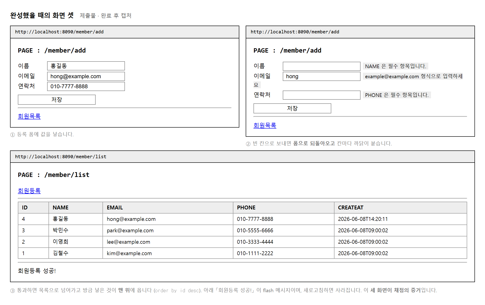
내는 것은 둘입니다. 완성한 GitHub 저장소 주소와 동작 화면을 담은 PDF 또는 PPT 입니다. 화면은 위의 셋을 넣고, 여기에 받자마자 찍은 500 오류 화면을 더하면 무엇을 만들었는지가 한눈에 드러납니다.
채점표가 두 벌 있습니다. 채점도구는 준거 여덟 개에 10 · 15 · 15 · 10 점을 주고, 평가도구의 세부 항목표는 스무 항목에 5점씩 줍니다. 묶음별 합계는 둘 다 50 · 50 이라 어긋나지 않습니다. 실제 채점은 세부 항목이 적힌 평가도구를 씁니다.
| 묶음 | 항목 수 | 항목당 | 합계 |
|---|---|---|---|
| 공통 모듈 설계 | 10 | 5점 | 50점 |
| 타 시스템 연동 | 10 | 5점 | 50점 |
항목이 잘게 나뉘어 있으니 하나씩 표를 보며 대조하는 것이 가장 빠릅니다. 이 교안의 각 단원 머리에 해당 채점 항목 번호를 달아 두었습니다.
목적 — 교과 이름은 「설계」 인데 내는 것은 코드와 화면입니다. 설계 문서를 따로 쓰라는 것이 아니라 어디에 무엇을 두었는지로 설계를 증명하라는 뜻입니다.
| 클래스 | 패키지 | 하는 일 |
|---|---|---|
MemberDTO | domain |
회원 한 명의 값을 담습니다 |
MemberDAO | dao |
SQL 은 여기에만 |
MemberController | controller |
화면 이름은 여기에만 |
DataSourceConfig | config |
데이터베이스 연결을 만듭니다 |
GlobalExceptionHandler | config |
어디서 터지든 한곳에서 받습니다 |
화면 일곱 장과 데이터베이스 스키마는 이미 완성되어 있습니다. 기능은 회원 등록과 목록 보기 둘뿐입니다.
| 넣고 싶어지는 것 | 넣으면 |
|---|---|
| 상세 보기 · 수정 · 삭제 | 점수가 오르지 않습니다. 채점표에 없습니다 |
| 검색 · 로그인 · 페이징 | 계층이 흐트러져 오히려 감점됩니다 |
| 묶음 | 항목 | 배점 | 무엇을 |
|---|---|---|---|
| 공통 모듈 설계 | 1-1 ~ 1-10 |
50 | 안쪽을 어떻게 나눴는가 |
| 타 시스템 연동설계 | 2-1 ~ 2-10 |
50 | 바깥과 어떻게 이었는가 |
한 항목이 5점씩 스무 항목입니다. 한두 개를 놓쳐도 합격선은 넘습니다. 문제는 한꺼번에 여러 개가 빠지는 경우입니다.
| 이렇게 하면 | 같이 빠지는 것 |
|---|---|
| SQL 을 컨트롤러에 씀 | 1-7 · 1-8 둘 다 (10점) |
| 패키지를 안 나누고 한 곳에 둠 | 1-2 · 1-3 · 1-7 |
| 연결 설정을 DAO 안에 박음 | 1-1 · 2-2 |
계층을 잘못 나누면 서너 항목이 함께 날아갑니다. 기능을 더 만드는 것보다 자리를 제대로 잡는 것이 점수가 큽니다.
DataSourceConfig 연결이 있어야 DAO 가 돌아갑니다
↓
MemberDTO 담을 그릇이 있어야 DAO 가 채웁니다
↓
MemberDAO 부를 것이 있어야 컨트롤러가 부릅니다
↓
MemberController 화면과 잇습니다
↓
GlobalExceptionHandler 마지막에 씌웁니다
안에서 바깥으로 만들어 나가면 중간에 막히는 일이 적습니다. 거꾸로 하면 컨트롤러를 다 써 놓고 부를 것이 없어 멈춥니다.
| 내는 것 | 무엇이 들어가야 | |
|---|---|---|
| □ | 저장소 주소 | 다섯 클래스 + 설정. 비공개면 강사 초대 |
| □ | 화면 캡처 PDF | 등록 화면 · 목록 화면 · 기동 로그 · 오류 화면 |
제출물 — 다섯 클래스의 자리를 적은 표 + 만드는 순서
스스로 확인 — ① 채울 것이 다섯인 것을 압니까 ② 없는 기능을 안 넣겠다고 정했습니까 ③ 계층이 어긋나면 여러 항목이 함께 빠진다는 것을 압니까 ④ 안에서 바깥으로 만드는 순서를 적었습니까
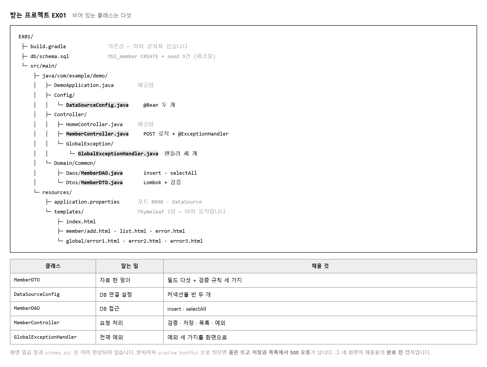
MySQL 의 testdb 에 db/schema.sql 을 실행합니다.
회원 테이블 하나와 seed 세 건이 생깁니다.
그 다음 gradlew.bat bootRun 으로 띄웁니다.
Gradle 이 처음에는 내려받느라 시간이 걸리니 넉넉히 기다리십시오.
-- db/schema.sql 이 만드는 것
CREATE TABLE tbl_member (
id BIGINT NOT NULL AUTO_INCREMENT,
name VARCHAR(50),
email VARCHAR(100),
phone VARCHAR(20),
createAt TIMESTAMP,
PRIMARY KEY (id)
);
INSERT INTO tbl_member VALUES (null, '김철수', 'kim@example.com', '010-1111-2222', now());
INSERT INTO tbl_member VALUES (null, '이영희', 'lee@example.com', '010-3333-4444', now());
INSERT INTO tbl_member VALUES (null, '박민수', 'park@example.com', '010-5555-6666', now());
띄우고 나면 /member/add 는 폼이 그대로 뜹니다.
화면이 이미 만들어져 있기 때문입니다.
그런데 저장을 누르거나 목록을 열면 500 오류가 납니다.
비어 있는 메서드가 UnsupportedOperationException 을 던지기 때문입니다.
목적 — 코드를 한 줄이라도 채우기 전에 해야 할 일이 둘입니다. 표를 만드는 것과 깨진 화면 넷을 찍는 것. 뒤의 것은 지금 아니면 다시 만들 수 없습니다.
mysql -u root -p testdb < db/schema.sql
CREATE TABLE tbl_member (
id BIGINT NOT NULL AUTO_INCREMENT,
name VARCHAR(50),
email VARCHAR(100),
phone VARCHAR(20),
createAt TIMESTAMP,
PRIMARY KEY (id)
);
seed 세 건까지 들어갑니다. 확인해 보십시오.
mysql> SELECT id, name, email FROM tbl_member;
+----+--------+------------------+
| id | name | email |
+----+--------+------------------+
| 1 | 김철수 | kim@example.com |
| 2 | 이영희 | lee@example.com |
| 3 | 박민수 | park@example.com |
+----+--------+------------------+
gradlew.bat bootRun
처음에는 Gradle 이 내려받느라 몇 분 걸립니다. 기다리십시오. 다 뜨면 로그의 마지막 네 줄이 이렇습니다.
com.zaxxer.hikari.HikariDataSource : HikariPool-1 - Starting...
com.zaxxer.hikari.pool.HikariPool : HikariPool-1 - Added connection com.mysql.cj.jdbc.ConnectionImpl@f9cab00
com.zaxxer.hikari.HikariDataSource : HikariPool-1 - Start completed.
o.s.boot.tomcat.TomcatWebServer : Tomcat started on port 8090 (http) with context path '/'
kr.bmember.BMemberApplication : Started BMemberApplication in 2.866 seconds
| 이 줄이 있으면 | 없으면 |
|---|---|
HikariPool-1 - Start completed. |
데이터베이스에 못 붙었습니다. 뒤가 다 안 됩니다 |
Tomcat started on port … |
웹 서버가 안 떴습니다. 화면이 안 열립니다 |
Port … already in use 를 만나면***************************
APPLICATION FAILED TO START
***************************
Description:
Web server failed to start. Port 8090 was already in use.
Action:
Identify and stop the process that's listening on port 8090 or configure this
application to listen on another port.
| 고치는 법 | 어떻게 |
|---|---|
| 앞서 띄운 것을 끕니다 | 콘솔의 붉은 네모 · Ctrl+C |
| 누가 쓰는지 찾습니다 | netstat -ano | findstr :8090 →
taskkill /F /PID … |
| 포트를 바꿉니다 | application.properties 의
server.port |
Description 에 무엇이,
Action 에 어떻게 가 적혀 있습니다.
스택 트레이스를 뒤지기 전에 이 두 칸부터 읽으십시오.화면은 이미 만들어져 있어 뜨기는 뜹니다. 그런데 누르면 500 이 납니다. 그것이 정상이고, 그 장면이 제출물입니다.
| 화면 | 보여야 할 것 | |
|---|---|---|
| 1 | 메인 | 그냥 뜹니다 |
| 2 | /member/add 폼 |
입력칸이 다 보입니다 |
| 3 | 저장을 누른 뒤 | 500 오류 |
| 4 | /member/list | 500 오류 |
500 화면에 이렇게 적혀 있으면 제대로 받은 것입니다.
java.lang.UnsupportedOperationException
캡처/
before_1_메인.png
before_2_등록폼.png
before_3_저장500.png
before_4_목록500.png
after_1_메인.png ← 나중에 같은 화면으로
after_2_등록폼.png
after_3_저장성공.png
after_4_목록.png
before 와 after 를 같은 화면으로 맞춰야 나란히 놓을 수 있습니다. before 는 등록 폼인데 after 는 목록이면 대조가 안 됩니다.
git add .
git commit -m "chore: 프로젝트 초기 상태"
아직 아무것도 안 만들었지만 「받은 그대로」 가 기록에 남습니다.
나중에 무엇을 얼마나 채웠는지 git diff 로 보일 수 있습니다.
제출물 — seed 세 건 조회 + 기동 로그 + 깨진 화면 네 장
스스로 확인 —
① tbl_member 에 세 건이 있습니까
② 로그에 HikariPool 과 Tomcat started 가 있습니까
③ 깨진 화면 넷을 찍었습니까
④ 파일 이름을 after 와 짝이 맞게 지었습니까
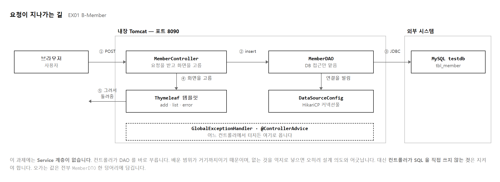
많은 교재가 Controller → Service → DAO 세 층을 가르칩니다. 이 과제에는 가운데 Service 가 없습니다. 컨트롤러가 DAO 를 바로 부릅니다. 배운 범위가 거기까지이기 때문이고, 없는 것을 넣으면 오히려 어긋납니다.
그래도 지켜야 할 선은 그대로입니다. 컨트롤러는 SQL 을 모르고, DAO 는 화면을 모릅니다. 이 두 문장이 채점 항목 1-7 과 1-8 의 전부입니다.
폼에서 온 값도 MemberDTO, DAO 가 돌려주는 것도 MemberDTO 입니다.
계층 사이에 값을 하나씩 넘기지 않고 한 덩어리로 묶어 넘깁니다.
필드가 하나 늘어도 메서드 서명이 안 바뀌는 것이 이 방식의 값입니다.
| 계층 | 아는 것 | 모르는 것 |
|---|---|---|
| MemberController | 화면 이름 · 요청 경로 · DAO | SQL · 연결 · 드라이버 |
| MemberDAO | SQL · 연결 · 테이블 구조 | 화면 이름 · 요청 경로 |
| MemberDTO | 자기 필드와 검증 규칙 | 위 둘을 전혀 모릅니다 |
목적 — 계층을 나누라는 말은 추상적입니다. 요청 하나가 어디를 지나는지 로그로 직접 보면 「컨트롤러는 SQL 을 모른다」 는 말이 무슨 뜻인지 손에 잡힙니다.
브라우저
│
↓ /member/add (POST)
MemberController ← 화면 이름과 경로를 «압니다»
│
↓ insert(MemberDTO)
MemberDAO ← SQL 과 연결을 «압니다»
│
↓ SELECT / INSERT
MySQL testdb
컨트롤러에 네 줄을 넣습니다.
private static final Logger log = LoggerFactory.getLogger(MemberController.class);
// 목록
log.info("목록 요청");
var list = memberDAO.selectAll();
log.info("DAO 가 돌려준 건수 = {}", list.size());
// 등록
log.info("등록 요청 담긴 DTO = {}", m);
int n = memberDAO.insert(m);
log.info("DAO 가 넣은 줄 수 = {}", n);
등록하고 목록을 열면 콘솔에 이렇게 찍힙니다.
[nio-8099-exec-1] MemberController : 등록 요청 담긴 DTO = null | 정유진 | yujin@example.com | 010-9999-0000
[nio-8099-exec-1] MemberController : DAO 가 넣은 줄 수 = 1
[nio-8099-exec-2] MemberController : 목록 요청
[nio-8099-exec-2] MemberController : DAO 가 돌려준 건수 = 5
| 보이는 것 | 뜻 |
|---|---|
DTO = null | 정유진 | … |
id 가 아직 null 입니다.
번호는 데이터베이스가 붙입니다 (AUTO_INCREMENT) |
넣은 줄 수 = 1 |
executeUpdate() 가 돌려준 값입니다 |
exec-1 · exec-2 |
요청마다 스레드가 다릅니다. Tomcat 이 나눠 줍니다 |
{} 자리표시자를 씁니다| 이렇게 적으면 | 이렇게 적습니다 |
|---|---|
log.info("건수 = " + list.size());
로그를 끄더라도 문자열을 먼저 만듭니다 |
log.info("건수 = {}", list.size());
로그를 끄면 아무 일도 안 합니다 |
| 계층 | 아는 것 | 모르는 것 |
|---|---|---|
| MemberController | 화면 이름 · 요청 경로 · DAO | SQL · 연결 · 드라이버 |
| MemberDAO | SQL · 연결 · 테이블 구조 | 화면 이름 · 요청 경로 |
| MemberDTO | 자기 필드 | 위 둘을 전혀 모릅니다 |
이 표가 채점 항목 1-7 과 1-8 의 전부입니다. 코드를 다 쓴 뒤 각 파일을 열어 이 표와 맞춰 보십시오.
// MemberController 안에 SQL 을 쓰면
String sql = "SELECT * FROM tbl_member"; // ← 컴파일 «됩니다»
// MemberDAO 안에 화면 이름을 쓰면
return "member/list"; // ← 컴파일 «됩니다»
MemberController.java 에서 SELECT ·
INSERT 를 찾아 0건인지 보십시오.| 값을 하나씩 넘기면 | DTO 로 묶어 넘기면 |
|---|---|
insert(String name, String email, String phone)
필드가 하나 늘면 메서드 서명이 바뀝니다. 부르는 쪽도 다 고쳐야 합니다 |
insert(MemberDTO m)
필드가 늘어도 서명은 그대로입니다 |
폼에서 온 값도 MemberDTO, DAO 가 돌려주는 것도 MemberDTO 입니다.
같은 그릇이 계층 사이를 오갑니다.
네 상자와 화살표면 됩니다. 전역 예외 처리를 아래에 받쳐 그리십시오.
| 그림에 넣을 것 | 왜 |
|---|---|
| 상자 넷 (브라우저 · 컨트롤러 · DAO · MySQL) | 계층이 셋인 것을 보입니다 |
| 옆에 Thymeleaf 템플릿 | 컨트롤러가 화면 이름만 주고 그리는 것은 템플릿 |
| 아래에 점선으로 전역 예외 | 어디서 터지든 여기로 모입니다 (실습 2-13) |
제출물 — 요청 흐름 로그 캡처 + 계층별 「아는 것 / 모르는 것」 표 + 흐름도
스스로 확인 —
① 로그로 지나가는 것을 봤습니까
② id 가 등록 전에는 null 인 것을 봤습니까
③ 컨트롤러에 SELECT · INSERT 가 0건입니까
④ DAO 에 화면 이름이 0건입니까
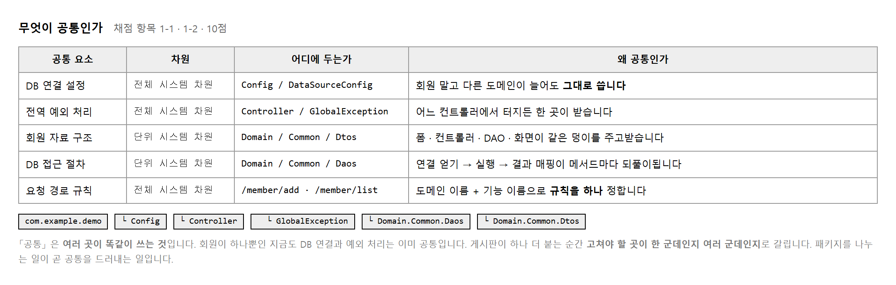
수행준거 1.1 이 「전체 시스템 차원과 단위 시스템 차원」 을 나눠 보라고 합니다. 전체 차원은 프로그램 전체가 같이 쓰는 것이고, 단위 차원은 한 기능 덩어리 안에서만 같이 쓰는 것입니다. DB 연결 설정은 전체 차원이고, 회원 자료 구조는 회원 기능 안에서만 쓰이니 단위 차원입니다.
지금은 회원 기능 하나뿐이라 나눌 까닭이 없어 보입니다. 그런데 게시판이 하나 더 붙는다고 생각해 보십시오. DB 연결 설정을 또 만들어야 하는지가 갈립니다. 공통으로 뽑아 두었으면 그대로 쓰고, 안 뽑았으면 베껴 씁니다. 베끼는 순간 계정이 바뀔 때 고칠 곳이 둘이 됩니다.
com.example.demo
├─ Config -- 프로그램 전체의 설정
│ └─ DataSourceConfig
├─ Controller -- 바깥 요청을 받는 쪽
│ ├─ HomeController
│ ├─ MemberController
│ └─ GlobalException -- 전역 예외는 따로 묶습니다
│ └─ GlobalExceptionHandler
└─ Domain.Common -- 도메인 공통 — 자료와 접근
├─ Daos / MemberDAO
└─ Dtos / MemberDTO
폴더 이름만 봐도 무엇이 어디 있는지 짐작됩니다. 채점 항목 1-2 가 「역할이 분명한 단위로 구분하여 패키지에 배치」 인데, 이 구조를 그대로 두는 것만으로 절반은 받습니다. 파일을 한 폴더에 다 몰아 넣으면 그 자리에서 잃습니다.
목적 — 항목 1-1 · 1-2 로 10점 입니다. 지금은 기능이 하나뿐이라 「공통」 이라는 말이 와닿지 않습니다. 하나 더 붙는다고 가정하면 무엇이 공통인지 바로 갈립니다.
| 공통 요소 | 차원 | 두는 곳 | 왜 공통인가 |
|---|---|---|---|
| DB 연결 설정 | 전체 | Config |
어느 기능이든 같은 데이터베이스를 씁니다 |
| 전역 예외 처리 | 전체 | Controller.GlobalException |
어디서 터지든 같은 화면을 보입니다 |
| 요청 경로 규칙 | 전체 | 규칙 문서 | /도메인/기능 — 기능마다 같은 꼴 |
| 회원 자료 구조 | 단위 | Domain.Common.Dtos |
회원 기능 안에서만 여러 곳이 씁니다 |
| DB 접근 절차 | 단위 | Domain.Common.Daos |
회원 표를 다루는 방법이 한곳에 모입니다 |
수행준거 1.1 이 「전체 시스템 차원과 단위 시스템 차원」 을 나눠 보라고 합니다. 표의 「차원」 칸이 그 답입니다.
나누는 기준이 헷갈리면 이렇게 물어보십시오.
| 물음 | 답이 뜻하는 것 |
|---|---|
| 게시판을 붙이면 이것도 또 만들어야 하나? | 아니오 → 전체 차원 (같이 씁니다)
예 → 단위 차원 (기능마다 따로) |
| 항목 | 게시판을 붙이면 | 차원 |
|---|---|---|
| DB 연결 설정 | 그대로 씁니다 | 전체 |
| 전역 예외 처리 | 그대로 씁니다 | 전체 |
| 회원 DTO | BoardDTO 를 따로 만듭니다 |
단위 |
| 회원 DAO | BoardDAO 를 따로 만듭니다 |
단위 |
com.example.demo
├─ Config 설정
│ └─ DataSourceConfig
├─ Controller 바깥 요청을 받는 쪽
│ ├─ HomeController
│ ├─ MemberController
│ └─ GlobalException 전역 예외는 «따로» 묶습니다
│ └─ GlobalExceptionHandler
└─ Domain.Common 도메인 공통
├─ Daos / MemberDAO
└─ Dtos / MemberDTO
폴더 이름만 봐도 무엇이 어디 있는지 짐작됩니다. 항목 1-2 가 「역할이 분명한 단위로 구분하여 패키지에 배치」 인데, 이 구조를 그대로 두는 것만으로 절반은 받습니다.
| 이렇게 하면 | 어떻게 보이는가 |
|---|---|
| 파일을 한 폴더에 다 넣음 | 「나누지 않았다」 — 그 자리에서 잃습니다 |
util · common 같은
이름만 공통인 폴더 |
무엇이 들었는지 짐작이 안 됩니다. 역할로 이름을 지으십시오 |
GlobalExceptionHandler 는 컨트롤러가 아닌데
Controller 아래에 둡니다.
| 왜 Controller 아래인가 | |
|---|---|
| 하는 일이 「요청에 응답하는 것」 | 오류가 났을 때 어떤 화면을 돌려줄지 정합니다 |
| 그래도 하위 폴더로 나눕니다 | 일반 컨트롤러와 성격이 달라 섞으면 헷갈립니다 |
docs/공통요소식별표.md
절차 1 의 표를 그대로 옮기고 패키지 구조를 아래에 붙입니다. 이 파일 하나가 항목 1-1 의 근거입니다.
Config 라고 적어 놓고
실제로는 DAO 안에 연결 정보를 박아 두면
표가 오히려 증거가 됩니다 — 「설계와 다르게 만들었다」.
다 만든 뒤 표와 폴더를 나란히 놓고 맞춰 보십시오.Eclipse 나 IntelliJ 의 왼쪽 탐색기를 다 펼친 채로 찍습니다. 접혀 있으면 나눴는지 안 나눴는지 안 보입니다.
제출물 — 공통 요소 식별표(다섯 · 차원 구분) + 패키지 구조 캡처
스스로 확인 — ① 다섯 가지를 전체 / 단위 로 나눴습니까 ② 「게시판이 붙는다면」 으로 설명할 수 있습니까 ③ 패키지가 역할 이름으로 나뉘어 있습니까 ④ 표와 실제 폴더가 같습니까
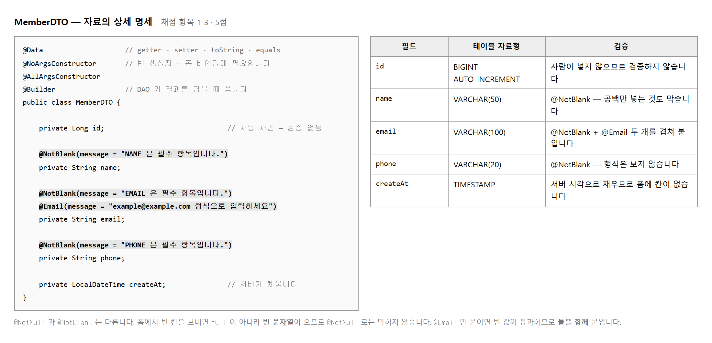
| 어노테이션 | 대신 써 주는 것 |
|---|---|
| @Data | getter · setter · toString · equals · hashCode |
| @NoArgsConstructor | 빈 생성자 — 폼 값을 담을 때 스프링이 이것을 씁니다 |
| @AllArgsConstructor | 모든 필드를 받는 생성자 — @Builder 가 안에서 씁니다 |
| @Builder | MemberDTO.builder().name(...).build() 형태 |
@NoArgsConstructor 를 빠뜨리면 폼 값이 담기지 않습니다.
@AllArgsConstructor 없이 @Builder 만 붙이면 컴파일이 안 됩니다.
넷이 서로 물려 있으니 통째로 붙이는 편이 안전합니다.
검증 규칙을 컨트롤러에 if 로 쓰면
같은 규칙을 여러 곳에서 되풀이하게 됩니다.
DTO 에 붙여 두면 그 자료를 쓰는 곳마다 규칙이 따라다닙니다.
이것이 「자료의 상세 명세」 라는 말의 뜻이며, 채점 항목 1-3 이 이것을 봅니다.
| 쓸 것 | 안 되는 것 | 까닭 |
|---|---|---|
| @NotBlank | @NotNull | 폼의 빈 칸은 null 이 아니라 빈 문자열로 옵니다 |
| @NotBlank + @Email | @Email 만 | @Email 은 빈 값을 통과시킵니다 |
| message 지정 | 기본 메시지 | 화면에 영어가 뜹니다. 사람이 읽을 문장을 적습니다 |
@NotNull 이 «빈 칸» 을 못 막는 것 보기
목적 — 항목 1-3 은 5점입니다. 자료의 모양과 규칙을 한 파일에 모으는 것이 과제입니다. 검증 어노테이션을 잘못 고르면 막힐 줄 알았는데 안 막힙니다.
| 필드 | 테이블 칸 | 자바 자료형 | 검증 |
|---|---|---|---|
id | id BIGINT |
Long | 없음 — DB 가 붙입니다 |
name | name VARCHAR(50) |
String | @NotBlank |
email | email VARCHAR(100) |
String | @NotBlank + @Email |
phone | phone VARCHAR(20) |
String | @NotBlank |
createAt | createAt TIMESTAMP |
LocalDateTime | 없음 — 서버가 넣습니다 |
id 를 long 이 아니라 Long 으로 둡니다.
등록 전에는 값이 없어야 하는데 long 은
null 을 담지 못해 0 이 됩니다.
@Data
@NoArgsConstructor
@AllArgsConstructor
@Builder
public class MemberDTO { … }
| 어노테이션 | 대신 써 주는 것 | 빠뜨리면 |
|---|---|---|
@Data |
getter · setter · toString ·
equals · hashCode |
화면에서 값을 못 꺼냅니다 |
@NoArgsConstructor | 빈 생성자 | 폼 값이 안 담깁니다 — 스프링이 이것을 씁니다 |
@AllArgsConstructor | 모든 필드를 받는 생성자 | @Builder 가 컴파일이 안 됩니다 |
@Builder |
MemberDTO.builder().name(…).build() |
DAO 에서 결과를 담기 번거로워집니다 |
넷이 서로 물려 있습니다. 통째로 붙이는 편이 안전합니다.
@Data 가 정말 만들어 줬는지 확인합니다MemberDTO d = MemberDTO.builder().name("홍길동")
.email("hong@example.com").phone("010-1111-2222").build();
System.out.println(d); // toString
System.out.println(d.getName()); // getter
System.out.println(d.equals(같은값)); // equals
MemberDTO(id=null, name=홍길동, email=hong@example.com, phone=010-1111-2222, createAt=null)
홍길동
true
한 줄도 안 썼는데 셋 다 됩니다. id 가
null 인 것도 보입니다.
lombok.jar 를 실행해서 설치해야 하고,
IntelliJ 는 Enable annotation processing 을 켜야 합니다.
컴파일은 되는데 편집기만 빨간 줄이면 이 경우입니다.@NotNull 로 해 보고 «안 막히는 것» 을 봅니다폼에서 빈 칸을 보내면 null 이 아니라 빈 문자열이 옵니다.
넷을 나란히 시험해 보십시오.
| 붙인 것 | 빈 문자열 "" |
공백만 " " | null |
|---|---|---|---|
@NotNull |
통과 (못 막음) | 통과 (못 막음) | 걸림 |
@NotBlank |
걸림 | 걸림 | 걸림 |
@Email 만 |
통과 (못 막음) | 걸림 | 통과 (못 막음) |
@NotBlank + @Email |
걸림 | 걸림 | 걸림 |
@NotNull 은 빈 칸을 못 막습니다.
폼에서 아무것도 안 치고 보내면 "" 이 오는데
그것은 null 이 아니기 때문입니다.
@NotBlank 를 쓰십시오 —
null · 빈 문자열 · 공백만 셋 다 막습니다.
그리고 @Email 만 붙이면 빈 칸이 그냥 통과합니다.
반드시 @NotBlank 와 함께 붙이십시오.@NotBlank(message = "이름을 입력하세요")
private String name;
@NotBlank(message = "이메일을 입력하세요")
@Email(message = "이메일 형식이 아닙니다")
private String email;
세 칸을 다 비우고 보내면 이렇게 나와야 합니다.
name : 이름을 입력하세요
phone : 연락처를 입력하세요
email : 이메일을 입력하세요
| message 를 안 적으면 | 적으면 |
|---|---|
| 화면에 영어가 뜹니다
must not be blank |
사람이 읽을 문장이 뜹니다 |
세 칸을 모두 비우고 저장을 눌러 보십시오.
| 화면에 보이는 것 | 뜻 |
|---|---|
| 메시지가 셋 다 | 규칙을 셋 다 달았습니다 |
| 메시지가 하나만 | 규칙을 하나만 달았습니다. 나머지 둘을 보십시오 |
| 아무 메시지 없이 저장됨 | 컨트롤러에 @Valid 를 안 붙였습니다 (실습 2-7) |
제출물 — MemberDTO.java 전체 +
세 칸을 비우고 저장했을 때 메시지 셋이 뜬 화면
스스로 확인 —
① Lombok 넷을 다 붙였습니까
② @NotNull 이 아니라 @NotBlank 입니까
③ @Email 에 @NotBlank 를 함께 붙였습니까
④ 메시지가 한국어입니까
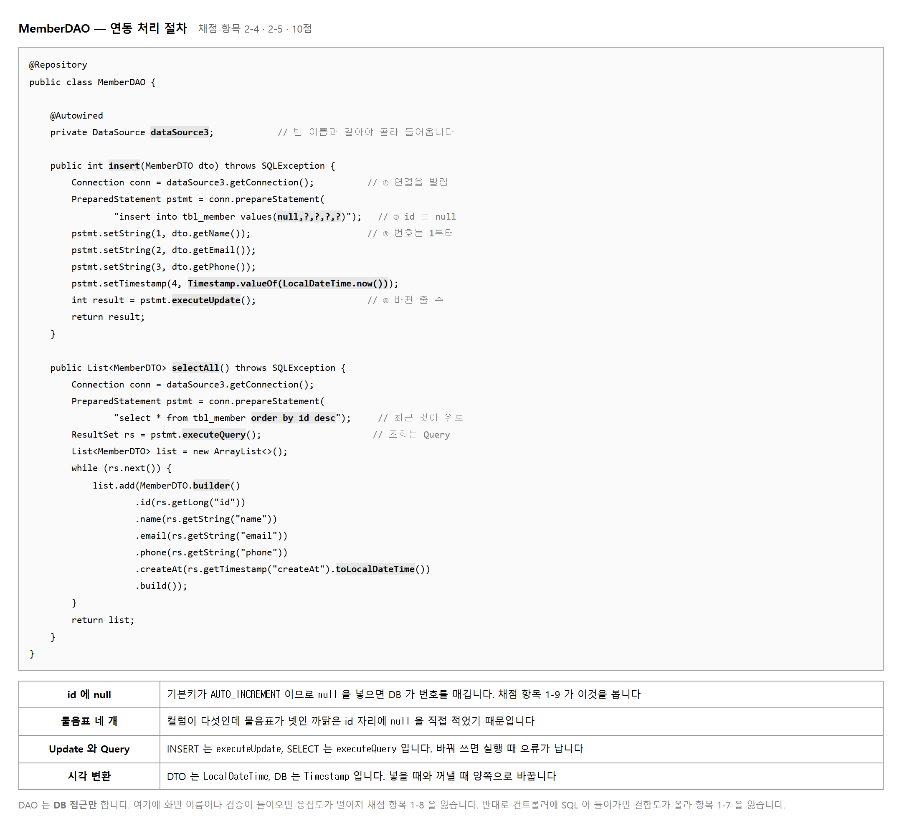
채점 항목 1-5 가 「insert 와 selectAll 단위 메서드로 적절히 나누어」 를 봅니다. 하나의 메서드가 「등록하고 목록도 돌려주는」 식이면 나뉜 것이 아닙니다. 한 메서드가 한 가지 일만 하도록 두는 것이 응집도를 높이는 방법입니다.
SQL 을 문자열로 이어 붙이면 값 안의 따옴표가 SQL 의 일부로 읽힙니다.
물음표를 두고 setString 으로 채우면 값은 끝까지 값으로만 남습니다.
채점 항목 2-5 가 「모든 SQL 을」 이라고 못 박았으므로
두 메서드 모두 PreparedStatement 여야 합니다.
// 이렇게 쓰면 안 됩니다
String sql = "insert into tbl_member values(null,'" + dto.getName() + "', ...)";
// 이렇게 씁니다 — 번호는 1부터입니다
PreparedStatement pstmt = conn.prepareStatement(
"insert into tbl_member values(null,?,?,?,?)");
pstmt.setString(1, dto.getName());
pstmt.setString(2, dto.getEmail());
DTO 는 LocalDateTime 을 쓰고 데이터베이스는 TIMESTAMP 를 씁니다.
넣을 때는 Timestamp.valueOf(...),
꺼낼 때는 rs.getTimestamp(...).toLocalDateTime() 입니다.
한쪽만 바꾸면 컴파일에서 바로 걸리니 놓치기는 어렵습니다.
INSERT 는 executeUpdate(), SELECT 는
executeQuery() 입니다. 바꿔 쓰면 컴파일은 되고 실행할 때 터집니다.
돌려주는 것이 하나는 바뀐 줄 수(int), 하나는 결과 집합(ResultSet)
이라는 점으로 외우면 헷갈리지 않습니다.
목적 — 항목 1-5 · 1-8 · 2-4 · 2-5 넷이 이 파일 하나를 봅니다. 20점 입니다. 메서드는 둘뿐인데 볼 것이 많습니다.
| 메서드 | 하는 일 «하나» | 돌려주는 것 |
|---|---|---|
insert(MemberDTO) | 한 건 넣기 | int — 바뀐 줄 수 |
selectAll() | 전부 꺼내기 | List<MemberDTO> |
항목 1-5 가 「단위 메서드로 적절히 나누어」 를 봅니다. 「등록하고 목록도 돌려주는」 메서드는 나뉜 것이 아닙니다. 한 메서드가 한 가지 일만 — 이것이 응집도입니다.
executeQuery 와 executeUpdate 를 바꿔 써 봅니다컴파일은 됩니다. 실행할 때 터집니다.
| 잘못 쓴 것 | 나오는 말 |
|---|---|
SELECT 에
executeUpdate() |
Can not issue executeUpdate() … with statements that
produce result sets |
INSERT 에
executeQuery() |
Statement.executeQuery() cannot issue statements that
do not produce result sets. |
executeUpdate 는 바뀐 줄 수(int),
executeQuery 는 결과 집합(ResultSet).
INSERT 는 돌려줄 표가 없고,
SELECT 는 바뀐 줄이 없습니다.// 이렇게 쓰면 «안 됩니다»
String sql = "insert into tbl_member values(null,'" + dto.getName() + "', ...)";
// 이렇게 씁니다 — 번호는 «1» 부터
PreparedStatement pstmt = conn.prepareStatement(
"insert into tbl_member values(null,?,?,?,?)");
pstmt.setString(1, dto.getName());
pstmt.setString(2, dto.getEmail());
setString 을 덜 부르면 이렇게 됩니다.
No value specified for parameter 3
SQL Injection 이 어렵게 느껴지면, 이름에 따옴표가 든 사람을
떠올리십시오. 오'브라이언 같은 이름은 실제로 있습니다.
보낸 SQL : INSERT INTO tbl_member VALUES (null,'오'브라이언','x@e.com','010',now())
You have an error in your SQL syntax; check the manual that corresponds to your
MySQL server version for the right syntax to use near '브라이언','x@e.com','010',now())' at line 1
이름 안의 따옴표가 문자열을 끊어 버렸습니다. 같은 이름을 물음표로 넣으면 이렇습니다.
넣은 줄 수 : 1
PreparedStatement 여야 합니다.| 방향 | 코드 | 왜 |
|---|---|---|
| DTO → DB | Timestamp.valueOf(dto.getCreateAt()) |
DB 는 TIMESTAMP, 자바는
LocalDateTime |
| DB → DTO | rs.getTimestamp("createAt").toLocalDateTime() |
반대 방향 |
한쪽만 바꾸면 컴파일에서 바로 걸립니다. 놓치기는 어렵습니다.
Builder 로 담습니다while (rs.next()) {
list.add(MemberDTO.builder()
.id(rs.getLong("id"))
.name(rs.getString("name"))
.email(rs.getString("email"))
.phone(rs.getString("phone"))
.createAt(rs.getTimestamp("createAt").toLocalDateTime())
.build());
}
setXxx 로 담으면 |
builder 로 담으면 |
|---|---|
| 객체를 먼저 만들고 다섯 줄 | 한 덩어리로 읽힙니다 |
| 하나 빠뜨려도 안 보입니다 | 이어 붙인 모양이라 빠진 것이 눈에 띕니다 |
| 찾을 것 | 몇 건이어야 | |
|---|---|---|
| □ | MemberDAO 안의
"member/ · return " |
0건 — 화면 이름을 모릅니다 |
| □ | MemberDAO 안의
createStatement |
0건 — 모두 prepareStatement |
| □ | SQL 문자열의 + |
변수가 붙은 것 0건 |
제출물 — MemberDAO.java 전체 +
따옴표가 든 이름을 이어 붙였을 때 / 바인딩했을 때 결과 두 장
스스로 확인 —
① 메서드가 둘이고 각각 한 가지만 합니까
② executeUpdate · executeQuery 를
제대로 골랐습니까
③ SQL 에 + 로 붙인 변수가 없습니까
④ DAO 에 화면 이름이 없습니까
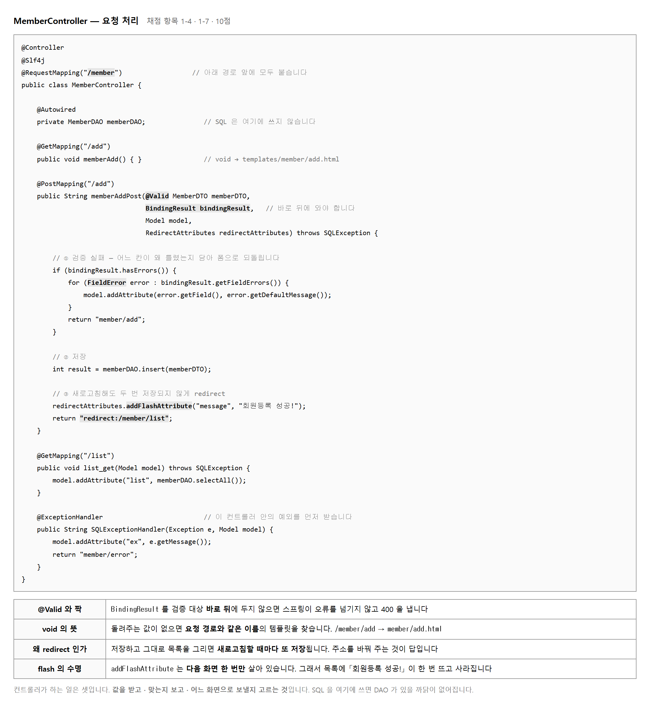
@Valid 가 붙은 값이 규칙에 안 맞으면 예외가 나지 않습니다.
결과가 BindingResult 에 담겨 들어옵니다.
그래서 try-catch 로는 잡히지 않고,
if (bindingResult.hasErrors()) 로 갈라야 합니다.
여기서 자리를 틀리는 일이 잦습니다.
BindingResult 는 검증 대상 바로 뒤에 와야 합니다.
사이에 Model 을 끼우면 스프링이 오류를 넘겨주지 않고
400 오류를 내 버립니다. 순서가 곧 규칙입니다.
for (FieldError error : bindingResult.getFieldErrors()) {
model.addAttribute(error.getField(), // "name" · "email" · "phone"
error.getDefaultMessage()); // DTO 에 적어 둔 문장
}
return "member/add"; // 폼으로 되돌아갑니다 (redirect 아님)
필드 이름을 그대로 모델 키로 쓰면
화면의 th:text="${name}" 이 그 칸 옆에 메시지를 찍습니다.
화면이 이미 그렇게 만들어져 있으니 키 이름을 마음대로 바꾸면 안 나옵니다.
저장한 자리에서 목록을 그려 주면, 사용자가 새로고침할 때
같은 POST 가 다시 날아가 회원이 또 들어갑니다.
주소를 /member/list 로 바꿔 주면 새로고침해도 조회만 다시 일어납니다.
다만 주소가 바뀌면 Model 에 담은 값이 사라집니다.
그래서 addFlashAttribute 를 씁니다.
다음 화면 한 번만 살아 있다가 없어지는 값입니다.
목록에 「회원등록 성공!」 이 한 번 뜨고, 새로고침하면 사라지는 것이 정상입니다.
목적 — 항목 1-4 · 1-7 로 10점 입니다. 컨트롤러는 받고 · 보고 · 어디로 보낼지 고르는 일만 합니다. 여기서 자리를 틀리는 곳이 둘, 빠뜨리는 곳이 둘입니다.
@Controller
@RequestMapping("/member") // 앞을 묶습니다
public class MemberController {
@GetMapping("/list") // → /member/list
@GetMapping("/add") // → /member/add
@PostMapping("/add") // → /member/add (POST)
}
같은 /add 인데 @GetMapping 은 폼 보여 주기,
@PostMapping 은 저장입니다.
주소가 같아도 방식(GET · POST)이 다르면 다른 메서드로 갑니다.
@PostMapping("/add")
public String add(@Valid MemberDTO dto, BindingResult bindingResult,
Model model, RedirectAttributes ra) {
if (bindingResult.hasErrors()) { … }
}
세 칸을 다 비우고 저장하면 콘솔에 이렇게 찍힙니다.
검증 실패 3건 — 예외는 «안» 났습니다
phone : 연락처를 입력하세요
email : 이메일을 입력하세요
name : 이름을 입력하세요
try-catch 로는 안 잡힙니다.
예외가 나지 않고 결과가 BindingResult 에 담겨 들어옵니다.
if (bindingResult.hasErrors()) 로 갈라야 합니다.BindingResult 자리를 «틀려» 봅니다검증 대상과 BindingResult 사이에 Model 을 끼워 보십시오.
// 틀림 — 사이에 Model 이 끼었습니다
public String add(@Valid MemberDTO dto, Model model, BindingResult bindingResult)
// 맞음 — 검증 대상 «바로 뒤»
public String add(@Valid MemberDTO dto, BindingResult bindingResult, Model model)
| 보낸 곳 | 결과 |
|---|---|
| 자리를 틀린 쪽 | HTTP 400 |
| 자리가 맞는 쪽 | HTTP 200 — 폼이 다시 뜹니다 |
틀린 쪽에서 실제로 던져지는 것은 이것입니다.
MethodArgumentNotValidException : Validation failed for argument [0] …
with 3 errors: [Field error in object 'memberDTO' on field 'email': …]
BindingResult 가 바로 뒤에 없으면
「이 사람은 오류를 받을 생각이 없구나」 로 보고 그대로 던집니다.
순서가 곧 규칙입니다. 사이에 아무것도 끼우지 마십시오.for (FieldError e : bindingResult.getFieldErrors()) {
model.addAttribute(e.getField(), // "name" · "email" · "phone"
e.getDefaultMessage()); // DTO 에 적어 둔 문장
}
return "member/add"; // 폼으로 «되돌아갑니다» (redirect 아님)
화면에 이렇게 붙습니다.
[이름 ] 이름을 입력하세요
[이메일 ] 이메일을 입력하세요
[연락처 ] 연락처를 입력하세요
| 주의 | |
|---|---|
| 키 이름을 마음대로 바꾸면 | 화면이 th:text="${name}" 으로 찾으므로
안 나옵니다. 필드 이름 그대로 쓰십시오 |
여기서는 redirect 가 아닙니다 |
주소를 바꾸면 model 이 사라져
메시지가 안 보입니다 |
redirect 합니다ra.addFlashAttribute("msg", "회원등록 성공!");
return "redirect:/member/list";
POST → 302 → http://localhost:8090/member/list
redirect 없이 목록을 그리면 |
redirect 하면 |
|---|---|
주소가 /member/add 인 채로 목록이 보입니다.
새로고침하면 같은 POST 가 다시 날아가
회원이 또 들어갑니다 |
주소가 /member/list 로 바뀝니다.
새로고침해도 조회만 다시 일어납니다 |
등록 직후 목록 : 회원등록 성공!
새로고침한 목록 : (메시지 없음 — 사라졌습니다)
redirect 하면 주소가 바뀌어 Model 에 담은 값이 사라집니다.
그래서 addFlashAttribute 를 씁니다 —
다음 화면 한 번만 살아 있다가 없어지는 값입니다.
새로고침하면 사라지는 것이 정상입니다.
SELECT name, COUNT(*) FROM tbl_member
GROUP BY name HAVING COUNT(*) > 1;
0건이어야 합니다. 여기서 뭔가 나오면
redirect 를 빠뜨린 것입니다.
화면만 봐서는 눈에 잘 안 띕니다.
| 찾을 것 | 몇 건이어야 | |
|---|---|---|
| □ | Connection ·
PreparedStatement · SELECT |
0건 (항목 1-7) |
| □ | @Valid |
POST 메서드에 있어야 합니다 |
| □ | redirect: |
성공 경로에 있어야 합니다 |
제출물 — MemberController.java +
검증 실패 화면(메시지 셋) + 등록 성공 후 목록(회원등록 성공!)
스스로 확인 —
① BindingResult 가 검증 대상 바로 뒤입니까
② 실패는 return "member/add",
성공은 redirect: 입니까
③ 오류 메시지 키가 필드 이름 그대로입니까
④ 새로고침해서 중복 등록이 안 되는지 봤습니까
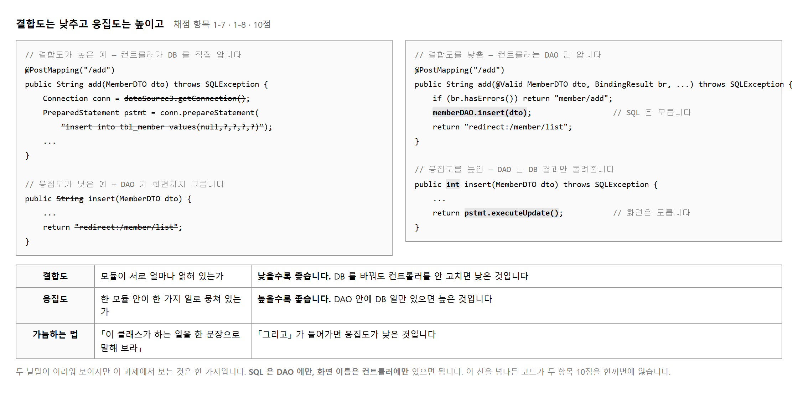
결합도는 「이 클래스를 고칠 때 다른 클래스도 같이 고쳐야 하는가」 입니다. 낮을수록 좋습니다. 데이터베이스를 MySQL 에서 다른 것으로 바꿔도 컨트롤러를 안 고쳐도 되면 결합도가 낮습니다.
응집도는 「이 클래스 안에 한 가지 일만 모여 있는가」 입니다. 높을수록 좋습니다. 가늠하는 방법이 하나 있습니다. 이 클래스가 하는 일을 한 문장으로 말해 보십시오. 「그리고」 가 들어가면 응집도가 낮은 것입니다.
| 클래스 | 한 문장으로 | 판정 |
|---|---|---|
| MemberDAO | 회원 자료를 데이터베이스에 넣고 꺼낸다 | 좋음 |
| MemberController | 회원 요청을 받아 검증하고 어느 화면으로 보낼지 고른다 | 좋음 |
| MemberDAO (잘못된 예) | 회원을 넣고 그리고 어느 화면으로 갈지 정한다 | 나쁨 |
낱말은 어렵지만 채점자가 보는 것은 두 가지뿐입니다.
MemberController 안에 Connection · PreparedStatement
· SQL 문자열이 없어야 합니다.MemberDAO 안에 "member/add" · "redirect:"
같은 화면 이름이 없어야 합니다.두 가지를 한 번씩 눈으로 훑어보는 것만으로 10점을 지킬 수 있습니다. 완성한 뒤 두 파일을 열어 확인하십시오.
목적 — 항목 1-7 · 1-8 로 10점 입니다. 낱말은 어려운데 채점자가 보는 것은 두 가지뿐입니다. 그리고 그 두 가지는 찾기 세 번으로 확인됩니다.
| 낱말 | 물어볼 것 | 어느 쪽이 좋은가 |
|---|---|---|
| 결합도 | 이 클래스를 고칠 때 다른 클래스도 같이 고쳐야 하나? | 낮을수록 좋습니다 |
| 응집도 | 이 클래스 안에 한 가지 일만 모여 있나? | 높을수록 좋습니다 |
가늠하는 방법이 하나 있습니다. 「그리고」 가 들어가면 낮은 것입니다.
| 클래스 | 한 문장으로 | 판정 |
|---|---|---|
MemberDAO |
회원 자료를 데이터베이스에 넣고 꺼낸다 | 좋음 |
MemberController |
회원 요청을 받아 검증하고 어느 화면으로 보낼지 고른다 | 좋음 |
MemberDAO
(잘못된 예) |
회원을 넣고 그리고 어느 화면으로 갈지 정한다 | 나쁨 |
| 이렇게 바꾼다면 | 고칠 곳이 몇 개인가 |
|---|---|
| MySQL 을 다른 데이터베이스로 | DataSourceConfig 하나면 결합도가 낮습니다.
컨트롤러까지 고쳐야 하면 높습니다 |
화면 이름을 member/list →
member/index 로 |
MemberController 하나면 낮습니다.
DAO 도 고쳐야 하면 높습니다 |
Eclipse 의 Ctrl+H → File Search 로
세 번 찾아 어느 파일에 몇 곳 있는지 봅니다.
| 찾을 말 | 나와야 하는 파일 | |
|---|---|---|
| ① | jdbc: · com.mysql ·
DriverManager |
DataSourceConfig 하나 |
| ② | SELECT · INSERT ·
insert into |
MemberDAO 하나 |
| ③ | return "member/ · redirect: |
MemberController
(그리고 GlobalExceptionHandler) |
제대로 나뉘어 있으면 이렇게 나옵니다.
=== 어느 파일이 «데이터베이스» 를 아는가 ===
config/DataSourceConfig.java 4곳
=== 어느 파일이 «SQL» 을 아는가 ===
dao/MemberDAO.java 2곳
=== 어느 파일이 «화면 이름» 을 아는가 ===
config/GlobalExceptionHandler.java 2곳
controller/MemberController.java 5곳
GlobalExceptionHandler 가 화면 이름을 아는 것은 맞습니다.
하는 일이 「오류가 났을 때 어떤 화면을 돌려줄지 정하는 것」 이라
성격이 컨트롤러와 같습니다. 문제가 아닙니다.// MemberController 안에서 연결을 직접 열면
Connection conn = DriverManager.getConnection(url, user, pw); // 컴파일 «됩니다»
// MemberDAO 가 화면 이름을 돌려주면
public String insert(MemberDTO dto) {
…
return "redirect:/member/list"; // 컴파일 «됩니다»
}
컨트롤러는 SQL 을 모른다.
DAO 는 화면을 모른다.
이 두 문장이 항목 1-7 과 1-8 의 전부입니다. 보고서나 발표에서 이 두 문장으로 설명하면 됩니다. 어려운 낱말을 쓸 필요가 없습니다.
| 어긴 것 | 잃는 항목 |
|---|---|
| 컨트롤러에 SQL 을 씀 | 1-7 · 1-8 둘 다 — 10점 |
| DAO 가 화면 이름을 돌려줌 | 1-8 · 그리고 1-5
(메서드가 한 가지 일만 안 함) |
| 연결 정보를 DAO 안에 박음 | 1-1(공통 식별) · 2-2(연동 설계) |
기능을 더 만드는 것보다 자리를 지키는 쪽이 점수가 큽니다.
제출물 — 찾기 세 번의 결과 캡처 + 「컨트롤러는 SQL 을 모른다 / DAO 는 화면을 모른다」 두 문장
스스로 확인 —
① jdbc: 가 DataSourceConfig 에만 있습니까
② SELECT · INSERT 가
MemberDAO 에만 있습니까
③ redirect: 가 DAO 에는 없습니까
④ 각 클래스를 「그리고」 없이 한 문장으로 말할 수 있습니까
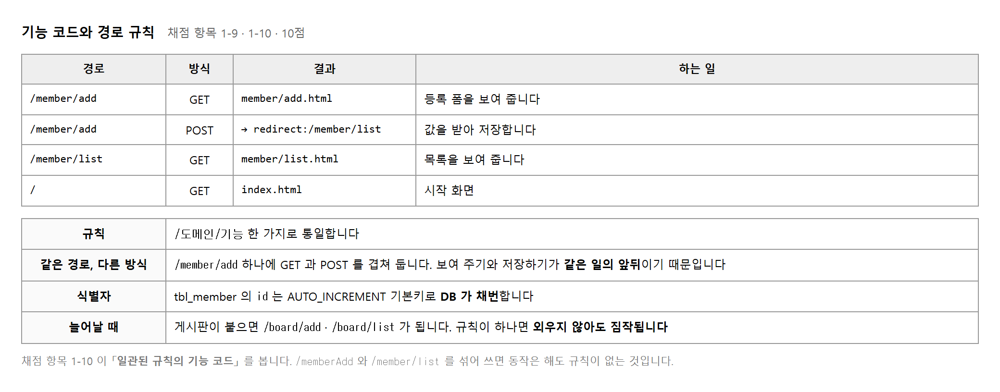
수행준거 1.4 가 말하는 「인덱스 번호」 는 이 과제에서 tbl_member.id 입니다.
AUTO_INCREMENT 로 두고 넣을 때 null 을 주면
데이터베이스가 번호를 매깁니다.
프로그램이 「지금 몇 번까지 있나」 를 세어 매기면
두 사람이 동시에 등록할 때 같은 번호가 나옵니다.
경로는 /도메인/기능 한 가지로 통일합니다.
회원 등록은 /member/add, 목록은 /member/list 입니다.
게시판이 붙으면 /board/add · /board/list 가 될 것이
보지 않아도 짐작됩니다. 그것이 규칙이 있다는 뜻입니다.
@Controller
@RequestMapping("/member") // 아래 경로 앞에 모두 붙습니다
public class MemberController {
@GetMapping("/add") // → /member/add 폼 보여 주기
@PostMapping("/add") // → /member/add 값 받아 저장
@GetMapping("/list") // → /member/list 목록
}
같은 /member/add 에 GET 과 POST 를 겹쳐 두는 것이 이상해 보일 수 있습니다.
보여 주기와 저장하기가 같은 일의 앞뒤이기 때문입니다.
검증에 실패해 폼으로 되돌아갈 때도 주소가 그대로라
사용자 눈에는 한 화면에 머무는 것처럼 보입니다.
/memberAdd 와 /member/list 를 섞어 쓰면
동작은 해도 규칙이 없는 것입니다.
채점 항목 1-10 이 「일관된 규칙의 기능 코드」 라고 못 박아 두었습니다.
제공된 화면의 링크가 이미 규칙대로 걸려 있으니 경로를 바꾸지 마십시오.
목적 — 항목 1-9 · 1-10 으로 10점 입니다. 규칙이 있다는 것은 게시판이 붙었을 때 주소를 짐작할 수 있다는 뜻입니다.
| 방식 | 경로 | 하는 일 | 돌려주는 것 |
|---|---|---|---|
| GET | / | 메인 | 화면 |
| GET | /member/add |
등록 폼 보여 주기 | 화면 |
| POST | /member/add |
값 받아 저장 | redirect |
| GET | /member/list | 목록 | 화면 |
같은 /member/add 에 GET 과 POST 가 겹칩니다.
보여 주기와 저장하기가 같은 일의 앞뒤이기 때문입니다.
검증에 실패해 폼으로 되돌아가도 주소가 그대로라
사용자 눈에는 한 화면에 머무는 것처럼 보입니다.
GET /member/add → 200 폼이 뜹니다
POST /member/add → 200 저장을 시도합니다 (검증 실패면 폼이 다시)
POST /member/list → 405 Method Not Allowed
GET /memberAdd → 404 Not Found
| 코드 | 뜻 | 언제 |
|---|---|---|
| 404 | 그런 주소가 없습니다 | 경로를 틀리게 적었습니다 |
| 405 | 주소는 있는데 방식이 없습니다 | @GetMapping 만 있는데 POST 로 보냈습니다 |
@GetMapping ·
@PostMapping 을 보십시오.@RequestMapping 으로 앞을 묶습니다@Controller
@RequestMapping("/member") // 아래 경로 앞에 모두 붙습니다
public class MemberController {
@GetMapping("/add") // → /member/add
@PostMapping("/add") // → /member/add (POST)
@GetMapping("/list") // → /member/list
}
| 앞을 안 묶으면 | 묶으면 |
|---|---|
메서드마다 "/member/add" 를 다 적습니다.
도메인 이름을 바꾸면 여러 곳을 고칩니다 |
클래스에 한 번. 바꿀 때도 한 곳 |
| 지금 경로 | 게시판이 붙으면 |
|---|---|
/member/add ·
/member/list |
/board/add · /board/list
— 보지 않아도 짐작됩니다 |
/memberAdd 와 /member/list 를 섞으면
게시판 주소를 짐작할 수 없습니다.
항목 1-10 이 「일관된 규칙의 기능 코드」 라고 못 박았습니다.
제공된 화면의 링크가 이미 규칙대로 걸려 있으니 경로를 바꾸지 마십시오.
바꾸면 링크가 다 깨집니다.수행준거 1.4 의 「인덱스 번호」 는 이 과제에서
tbl_member.id 입니다.
| 프로그램이 세어 매기면 | AUTO_INCREMENT 에 맡기면 |
|---|---|
SELECT MAX(id)+1 로 구하면
두 사람이 동시에 등록할 때
같은 번호가 나옵니다 |
데이터베이스가 겹치지 않게 매겨 줍니다.
넣을 때 null 만 주면 됩니다 |
INSERT INTO tbl_member VALUES (null, ?, ?, ?, now())
+----+-----------+
| id | name |
+----+-----------+
| 1 | 김철수 |
| 2 | 이영희 |
| 3 | 박민수 |
| 4 | 최지아 |
| 5 | 정유진 |
| 7 | 한도윤 | ← 6 이 없습니다
| 8 | 서하린 |
+----+-----------+
AUTO_INCREMENT 는 한 번 쓴 번호를 다시 안 씁니다.
빈 자리를 메우려 들면 앞의 동시 등록 문제가 다시 생깁니다.
비어 있어도 그냥 두십시오. 고장이 아닙니다.경로 규칙 : /도메인/기능 (예: /member/add · /member/list)
식별자 : tbl_member.id — AUTO_INCREMENT, 넣을 때 null
두 줄이면 됩니다. docs/ 에 넣거나 보고서에 적으십시오.
항목 1-9 · 1-10 의 근거가 됩니다.
제출물 — 경로 넷 표 + 404 · 405 확인 화면 + 규칙 두 줄
스스로 확인 —
① 경로가 모두 /도메인/기능 꼴입니까
② @RequestMapping 으로 앞을 묶었습니까
③ 제공된 화면의 링크를 안 바꿨습니까
④ id 를 데이터베이스가 매깁니까
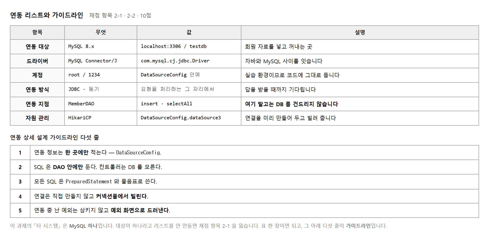
말이 거창하지만 이 과제에서는 MySQL 하나입니다. 내 프로그램 밖에 있고, 따로 켜고 끄고, 꺼져 있으면 내가 못 도는 것 — 그것이 타 시스템입니다. 외부 API 나 다른 서버가 없다고 이 요소를 건너뛰면 50점을 통째로 잃습니다.
무엇과 잇는지(대상), 무엇으로 잇는지(드라이버),
누구로 접속하는지(계정), 어떻게 잇는지(방식),
내 코드의 어디가 잇는 자리인지(연동 지점) 다섯입니다.
마지막 항목을 눈여겨보십시오. MemberDAO 말고는 DB 를 건드리지 않는다는 선언이
곧 설계이기 때문입니다.
이 과제의 연동은 동기입니다. 요청을 처리하는 그 자리에서 데이터베이스에 묻고 답이 올 때까지 기다립니다. 그래서 데이터베이스가 느리면 화면도 그만큼 늦게 뜨고, 꺼져 있으면 그 요청은 오류가 됩니다.
앞 교과 「인터페이스 구현」 의 비동기 방식과 견주면 차이가 뚜렷합니다. 거기서는 테이블에 쌓아 두고 나중에 가져갔습니다. 여기서는 바로 묻고 바로 받습니다. 화면을 그리려면 값이 지금 있어야 하므로 이쪽이 맞습니다.
목적 — 항목 2-1 · 2-2 로 10점 입니다. 「타 시스템이 없는데요」 하고 건너뛰면 능력단위요소 ② 50점이 통째로 위태로워집니다.
| 이런 것이면 타 시스템입니다 | 이 과제에서는 |
|---|---|
| 내 프로그램 밖에 있다 | MySQL 은 따로 설치한 프로그램입니다 |
| 따로 켜고 끕니다 | 서비스로 돌고 있습니다 |
| 꺼져 있으면 내가 못 돕니다 | 기동조차 안 됩니다 (실습 2-14) |
외부 API 나 다른 서버가 없어도 MySQL 하나가 타 시스템입니다. 대상이 하나여도 리스트라는 형식으로 적습니다.
| 항목 | 이 과제의 값 |
|---|---|
| 대상 | MySQL 8 — testdb |
| 드라이버 | com.mysql.cj.jdbc.Driver
(mysql-connector-j) |
| 계정 | testdb 에만 권한이 있는 계정 |
| 연동 방식 | JDBC · 동기 · 커넥션풀(HikariCP) |
| 연동 지점 | MemberDAO 하나 —
다른 클래스는 DB 를 건드리지 않습니다 |
MemberDAO 말고는 DB 를 안 건드린다」 는
한 줄이 곧 설계입니다.
실습 2-8 의 찾기 세 번이 이것을 증명합니다.| 규칙 | 어디서 지키는가 | |
|---|---|---|
| ① | 연동 정보는 한 곳에만 적는다 | DataSourceConfig |
| ② | 연결은 빌려 쓰고 돌려준다 | 커넥션풀 · try-with-resources |
| ③ | SQL 은 물음표로 바인딩한다 | MemberDAO |
| ④ | DB 를 만지는 클래스는 하나 | MemberDAO |
| ⑤ | 연동 오류는 한곳에서 받는다 | GlobalExceptionHandler |
다섯 줄이 각각 어느 파일에서 지켜지는지 적어 두십시오. 규칙만 있고 지키는 자리가 없으면 말뿐인 가이드라인입니다.
| 이 교과 — 동기 | 앞 교과(인터페이스 구현) — 비동기 |
|---|---|
| 요청을 처리하는 그 자리에서 묻고 답이 올 때까지 기다립니다 | 테이블에 쌓아 두고 나중에 배치가 가져갑니다 |
| DB 가 느리면 화면도 늦게 뜹니다 | 받는 쪽이 느려도 등록은 그냥 됩니다 |
| DB 가 꺼져 있으면 그 요청은 오류 | 꺼져 있어도 메모가 쌓여 나중에 갑니다 |
여기서는 동기가 맞습니다. 화면을 그리려면 값이 지금 있어야 하기 때문입니다. 목록을 「나중에 보여 드리겠습니다」 할 수는 없습니다.
목록 요청의 로그를 보면 DAO 가 돌려준 뒤에야 다음 줄이 찍힙니다.
[nio-8099-exec-2] MemberController : 목록 요청
[nio-8099-exec-2] MemberController : DAO 가 돌려준 건수 = 7
같은 스레드(exec-2)에서 차례로 찍힙니다.
기다렸다는 뜻입니다. 비동기였다면 다른 스레드에서 나중에 찍힙니다.
docs/연동리스트.md
절차 2 의 표와 절차 3 의 다섯 줄을 한 파일에 담습니다. 이 파일 하나가 항목 2-1 · 2-2 의 근거입니다. 코드가 아니라 문서로 내는 항목이라 빠뜨리기 쉽습니다.
제출물 — 연동 리스트 표(다섯 칸) + 가이드라인 다섯 줄 (각 줄이 지켜지는 파일 이름과 함께)
스스로 확인 —
① 대상이 하나여도 표를 만들었습니까
② 연동 지점이 MemberDAO 하나라고 적었습니까
③ 다섯 줄이 각각 어느 파일에서 지켜지는지 적었습니까
④ 동기인 까닭을 설명할 수 있습니까
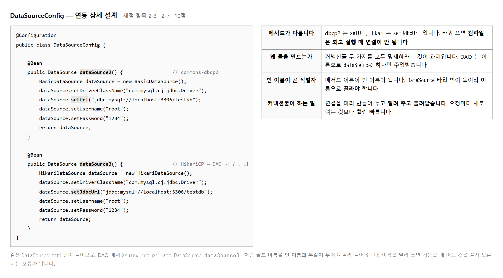
데이터베이스 연결을 여는 데는 생각보다 시간이 많이 듭니다.
요청마다 새로 열고 닫으면 그 시간이 그대로 사용자 대기 시간이 됩니다.
커넥션풀은 연결을 미리 몇 개 만들어 두고 빌려 주고 돌려받습니다.
getConnection() 이 실제로는 새로 여는 것이 아니라 빌리는 것입니다.
과제가 commons-dbcp2 와 HikariCP 둘 다 명세하라고 합니다.
그래서 빈을 둘 만들고, DAO 는 그중 dataSource3 하나만 씁니다.
채점 항목 2-7 이 「커넥션풀 미들웨어의 사용 목적을 명세」 이므로
두 가지를 모두 적어 두는 것이 답입니다.
| 구분 | commons-dbcp2 | HikariCP |
|---|---|---|
| 클래스 | BasicDataSource | HikariDataSource |
| 주소 설정 | setUrl(...) | setJdbcUrl(...) |
| 이 과제에서 | 명세만 합니다 | DAO 가 실제로 씁니다 |
| 스프링 부트 | 따로 의존성을 넣습니다 | 기본으로 들어 있습니다 |
setUrl 이 아예 없어
cannot find symbol 로 컴파일이 막힙니다.
대신 설정 파일이나 Properties 로 url 이라는 이름을 주면
컴파일은 되고 기동할 때
Property url does not exist on target class HikariConfig 가 납니다
(실습 2-11 절차 3).
기동 로그에 HikariPool-1 - Start completed 가 안 뜨면 이것부터 보십시오.
DataSource 타입 빈이 둘이라 스프링이 어느 것을 넣어야 할지 모릅니다.
필드 이름을 빈 이름과 똑같이 두면 그것으로 고릅니다.
@Repository
public class MemberDAO {
@Autowired
private DataSource dataSource3; // 빈 메서드 이름과 같아야 합니다
}
이름을 ds 같이 달리 지으면 기동할 때
후보가 둘이라 정할 수 없다는 오류가 납니다.
오류 문구에 후보 이름이 그대로 찍히니 당황하지 말고 읽으면 됩니다.
setUrl 과 setJdbcUrl
목적 — 항목 2-3 · 2-7 로 10점 입니다. 연결 정보를 한 곳에 모으고, 커넥션풀 둘을 명세합니다. 메서드 이름 하나 때문에 기동이 막히는 자리가 있습니다.
| 풀이 없으면 | 풀이 있으면 |
|---|---|
| 요청마다 연결을 새로 열고 닫습니다. 여는 데 드는 시간이 그대로 사용자 대기 시간 | 연결을 미리 만들어 두고 빌려 주고 돌려받습니다 |
getConnection() 이 실제로는 새로 여는 것이 아니라 빌리는 것입니다.
이름이 같아 헷갈리지만 하는 일이 다릅니다.
| 구분 | commons-dbcp2 | HikariCP |
|---|---|---|
| 클래스 | BasicDataSource |
HikariDataSource |
| 주소 설정 | setUrl(…) |
setJdbcUrl(…) |
| 이 과제에서 | 명세만 합니다 | DAO 가 실제로 씁니다 |
| 스프링 부트 | 따로 의존성을 넣습니다 | 기본으로 들어 있습니다 |
항목 2-7 이 「커넥션풀 미들웨어의 사용 목적을 명세」 이므로 둘 다 적어 두는 것이 답입니다. 쓰는 것은 하나여도 됩니다.
setUrl 을 Hikari 에 써 봅니다HikariDataSource ds = new HikariDataSource();
ds.setUrl("jdbc:mysql://localhost:3306/testdb");
error: cannot find symbol
ds.setUrl("jdbc:mysql://localhost:3306/testdb");
^
symbol: method setUrl(String)
아예 없습니다. HikariDataSource 에 있는 것은
setJdbcUrl 하나뿐입니다. 컴파일에서 막히니 오히려 다행입니다.
이름을 url 로 주면 컴파일은 됩니다.
기동할 때 터집니다.
Property url does not exist on target class com.zaxxer.hikari.HikariConfig
jdbcUrl 이라는 이름을 씁니다.
spring.datasource.url 에 익숙해져 있으면
빈을 손수 만들 때도 url 이라고 적게 됩니다.
기동 로그에 HikariPool-1 - Start completed 가 안 뜨면
이것부터 보십시오.HikariDataSource : HikariPool-1 - Starting...
HikariPool : HikariPool-1 - Added connection com.mysql.cj.jdbc.ConnectionImpl@f9cab00
HikariDataSource : HikariPool-1 - Start completed.
| 보이는 줄 | 뜻 |
|---|---|
Starting... | 풀을 만들기 시작했습니다 |
Added connection … |
실제로 하나 붙었습니다. 이 줄이 연동의 증거입니다 |
Start completed. | 준비 끝 |
가운데 줄이 없으면 붙은 것이 아닙니다. 계정 · 비밀번호 · 주소를 보십시오.
@Repository
public class MemberDAO {
@Autowired
private DataSource dataSource3; // 빈 «메서드 이름» 과 같아야 합니다
}
| 겪는 일 | 까닭 |
|---|---|
기동할 때
expected single matching bean but found 2 |
같은 타입(DataSource) 빈이 둘인데
이름이 안 맞습니다 |
| 필드 이름을 빈 이름과 같게 두면 | 스프링이 그것으로 고릅니다 |
@Qualifier("dataSource3") 를 붙이면
이름에 기대지 않고 대놓고 고릅니다.
필드 이름을 바꾸다가 깨질 일이 없습니다.=== 어느 파일이 «데이터베이스» 를 아는가 ===
config/DataSourceConfig.java 4곳
한 파일에만 나와야 합니다.
DAO 안에 jdbc:mysql://… 가 있으면
항목 2-3 과 실습 2-8 의 결합도를 함께 잃습니다.
config.setMaximumPoolSize(10);
config.setPoolName("HikariPool-1");
숫자 자체는 크게 중요하지 않습니다. 「미리 몇 개를 만들어 두는지 정했다」 는 것이 명세를 했다는 뜻입니다. 보고서에 한 줄 적으십시오.
제출물 — DataSourceConfig.java +
HikariPool-1 - Added connection 이 보이는 기동 로그 +
커넥션풀 둘 비교표
스스로 확인 —
① Hikari 에 setJdbcUrl 을 썼습니까
② 기동 로그에 Added connection 이 있습니까
③ 빈이 둘일 때 어느 것을 쓸지 정했습니까
④ jdbc: 가 이 파일에만 있습니까
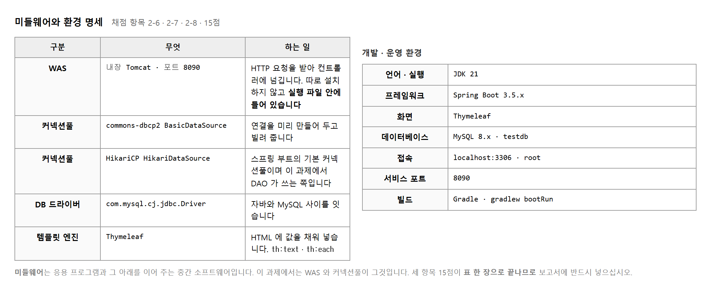
미들웨어는 내 프로그램과 그 아래 시스템 사이에 낀 소프트웨어입니다. 내가 만든 것도 아니고 운영체제도 아닌, 가운데에서 일을 대신해 주는 것입니다. 이 과제에는 셋이 있습니다.
Thymeleaf 는 미들웨어라기보다 템플릿 엔진이지만, 기술 영역별로 정리하라는 항목 2-8 에는 함께 적어 두는 편이 낫습니다.
-- 이 세 줄이 미들웨어가 떴다는 증거입니다 HikariPool-1 - Starting... HikariPool-1 - Start completed. // 커넥션풀 Tomcat started on port 8090 // WAS Starting DemoApplication using Java 21 // 실행 환경
보고서에 표만 적는 것보다 기동 로그 한 장을 함께 붙이는 것이 낫습니다. 적어 둔 것과 실제로 뜬 것이 같다는 증명이 되기 때문입니다. 항목 2-6 · 2-7 · 2-8 세 개를 한 장으로 받칠 수 있습니다.
목적 — 항목 2-6 · 2-7 · 2-8 이 이 표 하나를 봅니다. 코드를 안 쓰고 15점 입니다. 그런데 문서로 내는 항목이라 빠뜨리기 가장 쉽습니다.
| 이런 것이 미들웨어입니다 | |
|---|---|
| 내가 만든 것이 아니고 | 가져다 쓰는 것입니다 |
| 운영체제도 아닌 | 윈도우나 리눅스가 아닙니다 |
| 가운데에서 일을 대신해 준다 | 내 코드와 그 아래 시스템 사이 |
| 기술 영역 | 무엇 | 하는 일 |
|---|---|---|
| WAS | 내장 Tomcat | HTTP 요청을 받아 컨트롤러에 넘겨 줍니다 |
| 커넥션풀 | HikariCP (+ commons-dbcp2) | 데이터베이스 연결을 빌려 주고 돌려받습니다 |
| DB 드라이버 | mysql-connector-j |
자바의 말을 MySQL 의 말로 옮깁니다 |
| 템플릿 엔진 | Thymeleaf | 값을 끼워 HTML 을 만들어 줍니다 |
Tomcat started on port … 가
쓰고 있다는 증거입니다.| 항목 | 값 | 어디서 확인 |
|---|---|---|
| JDK | 21 | 기동 로그 using Java 21 |
| 프레임워크 | Spring Boot | 기동 배너 :: Spring Boot :: |
| 데이터베이스 | MySQL 8 · testdb |
SELECT VERSION(); |
| 포트 | 8090 | application.properties · 기동 로그 |
| 빌드 | Gradle | build.gradle · gradlew |
Starting BMemberApplication using Java 21.0.2
HikariDataSource : HikariPool-1 - Starting...
HikariDataSource : HikariPool-1 - Start completed.
TomcatWebServer : Tomcat started on port 8090 (http) with context path '/'
BMemberApplication : Started BMemberApplication in 2.866 seconds
| 이 줄이 받쳐 주는 항목 | |
|---|---|
using Java 21 | 실행 환경 (2-8) |
HikariPool-1 - Start completed |
커넥션풀 (2-7) |
Tomcat started on port 8090 | WAS (2-6) |
java -version → JDK 판
mysql -u root -p -e "SELECT VERSION();" → MySQL 판
gradlew.bat --version → Gradle 판
기억으로 적지 마십시오. 「MySQL 8 쯤 될 겁니다」 로 적어 두었다가 실제로는 다른 판이면 명세가 틀린 것입니다.
| 이름만 적으면 | 목적을 적으면 |
|---|---|
| HikariCP | HikariCP — 연결을 미리 만들어 두고 빌려 줘 요청마다 여는 시간을 없앱니다 |
| Thymeleaf | Thymeleaf — HTML 에 값을 끼워 화면을 만듭니다. 서버에서 그려 보냅니다 |
항목 2-7 이 「사용 «목적» 을 명세」 라고 적혀 있습니다. 이름만 나열한 표는 목적을 적은 것이 아닙니다.
docs/미들웨어명세.md
- 미들웨어 넷 (기술 영역 · 이름 · 목적)
- 개발 운영 환경 (JDK · 프레임워크 · DB · 포트 · 빌드)
- 기동 로그 캡처
제출물 — 미들웨어 표 + 환경 표 + 기동 로그 캡처
스스로 확인 — ① 미들웨어를 넷 적었습니까 (Tomcat 을 빠뜨리기 쉽습니다) ② 이름만이 아니라 목적을 적었습니까 ③ 판을 직접 확인해 적었습니까 ④ 기동 로그를 함께 붙였습니까
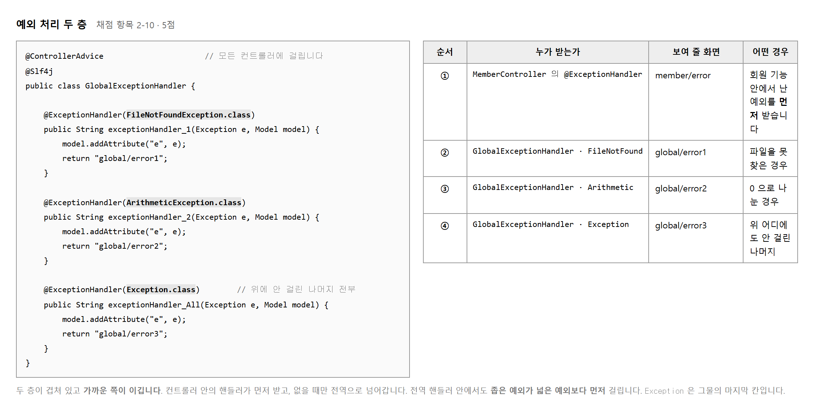
회원 기능에서 난 오류는 회원 오류 화면으로 보내는 것이 친절합니다. 그런데 오류가 어디서 날지 다 알 수는 없습니다. 그래서 회원 안에서 난 것은 회원 핸들러가, 나머지는 전역 핸들러가 받는 두 층을 둡니다.
두 층이 겹치면 가까운 쪽이 이깁니다.
컨트롤러 안의 @ExceptionHandler 가 먼저 보고,
없을 때만 @ControllerAdvice 로 넘어갑니다.
전역 핸들러 안에서도 순서가 있습니다.
좁은 예외가 넓은 예외보다 먼저 걸립니다.
ArithmeticException 은 Exception 의 자식이라
둘 다 걸릴 수 있지만, 더 구체적인 쪽이 이깁니다.
Exception 은 그물의 마지막 칸이라고 생각하면 됩니다.
| 순서 | 잡는 것 | 보내는 화면 | 어떤 경우 |
|---|---|---|---|
| 1 | MemberController 의 @ExceptionHandler | member/error | 회원 기능 안에서 난 예외 |
| 2 | FileNotFoundException | global/error1 | 파일을 못 찾음 |
| 3 | ArithmeticException | global/error2 | 0 으로 나눔 |
| 4 | Exception | global/error3 | 나머지 전부 |
화면 일곱 장 가운데 네 장이 오류 화면입니다. 이미 만들어져 있으니 핸들러의 반환 문자열만 맞추면 됩니다. 이름을 틀리면 「템플릿을 못 찾는다」 는 또 다른 오류가 납니다.
목적 — 항목 2-10 은 5점입니다. 핸들러를 넷 만들고 일부러 터뜨려 어느 것이 받는지 확인합니다. 순서를 눈으로 봐야 이해됩니다.
@GetMapping("/boom/math")
public String boomMath() { return String.valueOf(1 / 0); }
@GetMapping("/boom/file")
public String boomFile() throws FileNotFoundException {
throw new FileNotFoundException("없는파일.txt");
}
@GetMapping("/boom/state")
public String boomState() { throw new IllegalStateException("회원 기능 안에서 난 것"); }
| 순서 | 잡는 것 | 보내는 화면 | 어디에 |
|---|---|---|---|
| 1 | IllegalStateException |
member/error |
컨트롤러 «안» |
| 2 | FileNotFoundException |
global/error1 | 전역 |
| 3 | ArithmeticException |
global/error2 | 전역 |
| 4 | Exception |
global/error3 | 전역 — 마지막 칸 |
/member/boom/math → global/error2
/member/boom/file → global/error1
/member/boom/state → member/error
[전역] ArithmeticException → global/error2
[전역] FileNotFoundException → global/error1
[컨트롤러] IllegalStateException → member/error
| 여기서 배우는 것 | |
|---|---|
| 가까운 쪽이 이깁니다 | IllegalStateException 은
전역의 Exception 에도 걸릴 수 있는데
컨트롤러 안의 핸들러가 먼저 받았습니다 |
| 좁은 쪽이 이깁니다 | ArithmeticException 은
Exception 의 자식인데
더 구체적인 쪽이 받았습니다 |
Exception 은 그물의 마지막 칸이라고 생각하면 됩니다.
앞의 칸에 안 걸린 것만 여기로 옵니다.
return "global/error2" 를
"global/erorr2" 로 바꿔 보십시오.
HTTP 500
org.thymeleaf.exceptions.TemplateInputException:
Error resolving template [global/erorr2],
template might not exist or might not be accessible by any of the configured Template Resolvers
templates/ 아래의 폴더와 파일 이름을 그대로 적으십시오
(확장자 .html 은 빼고).@ExceptionHandler(Exception.class) 는 그물이 너무 넓어
스프링이 스스로 처리하던 것까지 가져갑니다.
| 요청 | 그물이 넓으면 | 제대로 두면 |
|---|---|---|
GET /memberAdd (없는 주소) |
200 + 오류 화면 | 404 |
POST /member/list (없는 방식) |
200 + 오류 화면 | 405 |
| 층 | 맡는 것 |
|---|---|
| 컨트롤러 안 | 그 기능에서만 나는 오류. 그 기능에 맞는 화면으로 보냅니다 |
| 전역 | 어디서 날지 모르는 나머지. 빠짐없이 받는 것이 목적입니다 |
회원 기능에서 난 오류를 회원 오류 화면으로 보내는 것이 친절합니다. 그런데 오류가 어디서 날지 다 알 수는 없으므로 받아 주는 층을 하나 더 둡니다.
| 찍을 것 | 보여야 할 것 | |
|---|---|---|
| 1 | /member/boom/state |
member/error — 컨트롤러 핸들러가 이김 |
| 2 | /member/boom/math |
global/error2 — 좁은 쪽이 이김 |
| 3 | /member/boom/file |
global/error1 |
| 4 | 서버 콘솔 | 어느 핸들러가 받았는지 찍힌 줄 |
제출물 — 핸들러 넷의 코드 + 오류 화면 셋 + 콘솔 로그
스스로 확인 —
① 핸들러가 넷입니까
② 가까운 쪽 · 좁은 쪽이 이기는 것을 봤습니까
③ 화면 이름이 templates/ 아래와 정확히 같습니까
④ 404 · 405 가 200 으로 안 바뀝니까
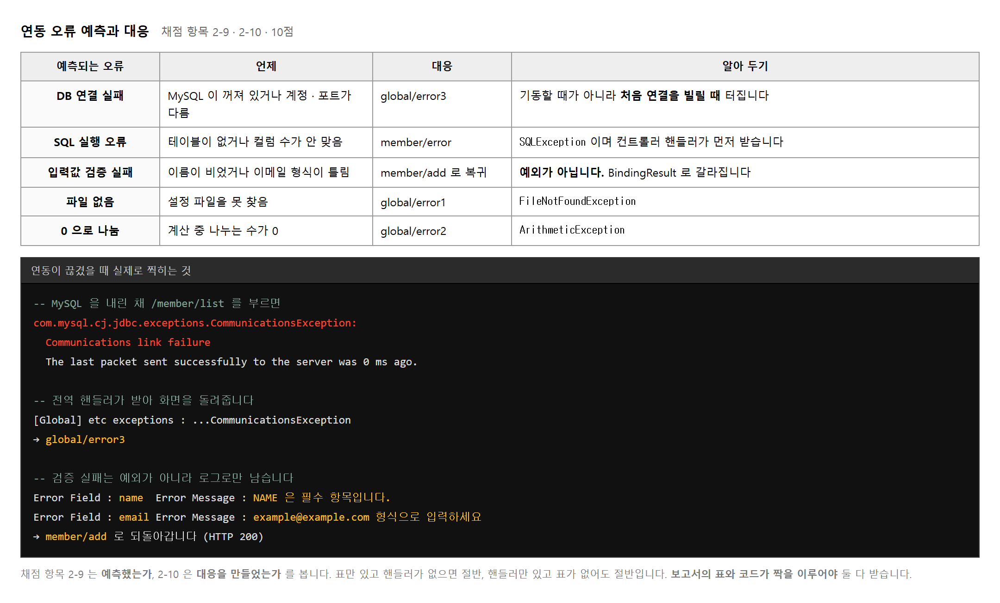
채점 항목 2-9 가 「DB 연결 실패, SQLException, 입력값 검증 실패」 를 콕 집어 적었습니다. 세 가지의 성격이 서로 다릅니다.
| 오류 | 누구 탓인가 | 예외인가 | 어떻게 갈라지는가 |
|---|---|---|---|
| DB 연결 실패 | 환경 · 운영 | 예 | 전역 핸들러 → global/error3 |
| SQL 실행 오류 | 개발자 | 예 | 컨트롤러 핸들러 → member/error |
| 입력값 검증 실패 | 사용자 | 아니오 | BindingResult → 폼으로 복귀 |
세 번째는 예외가 아닙니다. 사용자가 이름을 안 적은 것은 잘못이 아니라 흔한 일입니다. 흔한 일을 예외로 처리하면 오류 화면이 뜨고, 사용자는 자기가 무엇을 잘못했는지 모릅니다. 그래서 폼으로 되돌리고 칸 옆에 까닭을 적는 것이 답입니다.
표만 있고 핸들러가 없으면 항목 2-9 만 받고 2-10 은 못 받습니다. 반대로 핸들러만 있고 표가 없어도 절반입니다. 보고서의 표와 코드의 핸들러가 줄 단위로 맞아야 둘 다 받습니다.
global/error3 이 뜹니다.
그 화면을 캡처해 두면 「대응 방안을 제시했다」 는 증거가 됩니다.
실제로 멈춰 보기 전에는 어느 화면이 뜨는지 알 수 없습니다.
목적 — 항목 2-9 · 2-10 으로 10점 입니다. 표만 있고 핸들러가 없으면 절반, 핸들러만 있고 표가 없어도 절반입니다. 표와 코드가 줄 단위로 맞아야 둘 다 받습니다.
| 오류 | 누구 탓 | 예외인가 | 어디로 갑니까 |
|---|---|---|---|
| DB 연결 실패 | 환경 · 운영 | 예 | 전역 핸들러 → global/error3 |
| SQL 실행 오류 | 개발자 | 예 | 컨트롤러 핸들러 → member/error |
| 입력값 검증 실패 | 사용자 | 아니오 | BindingResult → 폼으로 복귀 |
net stop MySQL80 (또는 서비스에서 중지)
/member/list → 화면 = global/error3
[전역] SQLTransientConnectionException → global/error3
| 보이는 것 | 뜻 |
|---|---|
SQLTransientConnectionException |
일시적인 연결 문제라는 뜻입니다. 커넥션풀이 연결을 못 빌려 줬습니다 |
global/error3 화면 |
Exception 그물에 걸렸습니다.
사용자에게 스택 트레이스가 안 보입니다 |
여기서 확인할 것이 하나 더 있습니다. MySQL 을 다시 올리고 목록을 열어 보십시오.
/member/list → 200
(풀이 «스스로» 다시 붙습니다)
서버를 다시 띄울 필요가 없습니다. 커넥션풀이 알아서 다시 붙습니다. 이것도 커넥션풀을 쓰는 값입니다 — 보고서에 한 줄 적으십시오.
칸 이름을 name 대신 memberName 으로 바꿔 보십시오.
SQLSyntaxErrorException
SQLState 42S22 / code 1054
Unknown column 'memberName' in 'field list'
| 메시지 조각 | 읽는 법 |
|---|---|
Unknown column |
그런 칸이 없습니다. 표의 칸 이름을 보십시오 |
'memberName' |
어느 이름을 못 찾았는지 따옴표로 알려 줍니다 |
42S22 |
「칸을 못 찾음」 을 뜻하는 표준 코드 |
[이름 ] 이름을 입력하세요
[이메일 ] 이메일을 입력하세요
[연락처 ] 연락처를 입력하세요
오류 화면이 뜨면 잘못한 것입니다. 폼에 그대로 머물면서 칸 옆에 까닭이 붙어야 합니다 (실습 2-7).
| 예측한 오류 | 대응 | 코드의 어디 |
|---|---|---|
| DB 연결 실패 | 전역 오류 화면 | GlobalExceptionHandler.onAny |
| SQL 실행 오류 | 회원 오류 화면 | MemberController.onLocal |
| 입력값 검증 실패 | 폼 복귀 + 칸별 메시지 | MemberController.add 의
hasErrors() |
| 파일 없음 | global/error1 |
GlobalExceptionHandler.onFile |
| 0 으로 나눔 | global/error2 |
GlobalExceptionHandler.onMath |
「코드의 어디」 칸을 비워 두지 마십시오. 이 칸이 항목 2-10 의 근거입니다. 못 적는 줄이 있으면 그 대응을 안 만든 것입니다.
| 상황 | 찍을 것 | |
|---|---|---|
| 1 | MySQL 을 내린 채 목록 | global/error3 화면 + 콘솔 |
| 2 | MySQL 을 다시 올린 뒤 목록 | 정상 목록 — 스스로 회복 |
| 3 | 세 칸 비우고 저장 | 폼에 메시지 셋 |
제출물 — 오류 예측·대응 표(코드 위치 포함) + 캡처 셋
스스로 확인 — ① 셋의 성격이 다르다는 것을 압니까 ② MySQL 을 실제로 내려 봤습니까 ③ 다시 올렸을 때 스스로 회복하는 것을 봤습니까 ④ 표의 「코드의 어디」 칸을 다 채웠습니까
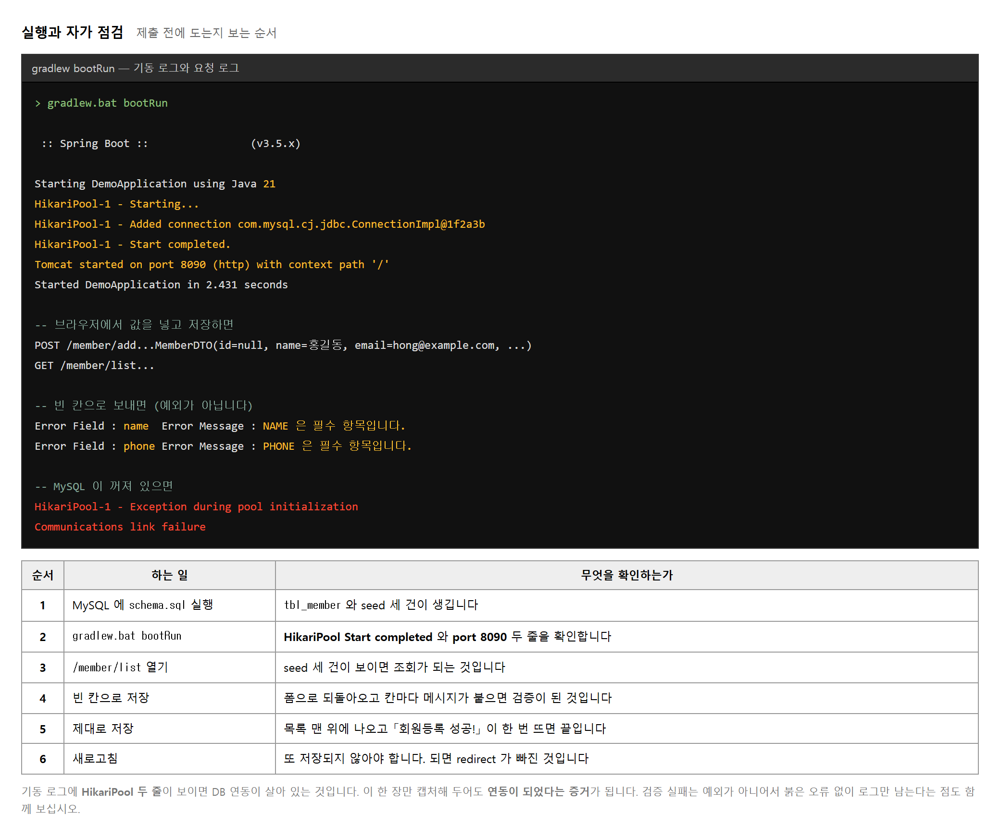
기동할 때 찍히는 줄이 많아 보이지만 봐야 할 것은 넷입니다. 자바 버전, 커넥션풀 시작, 포트, 그리고 걸린 시간입니다. 커넥션풀 줄이 안 보이면 데이터베이스에 못 붙은 것이고, 포트 줄이 안 보이면 웹 서버가 안 떴습니다.
요청을 보낼 때마다 찍히는 줄도 있습니다.
MemberController 에 @Slf4j 가 붙어 있어
log.info(...) 로 남긴 것이 그대로 보입니다.
값이 제대로 담겼는지 여기서 먼저 확인할 수 있습니다.
그림 아래의 여섯 단계를 순서대로 해 보십시오.
마지막 새로고침을 빠뜨리지 마십시오.
저장 뒤 새로고침했을 때 같은 회원이 또 들어가면
redirect 가 빠진 것이고, 이것은 눈에 잘 안 띕니다.
-- 정말 두 번 들어갔는지 보는 SQL SELECT name, COUNT(*) FROM tbl_member GROUP BY name HAVING COUNT(*) > 1; -- 검증이 도는지 보는 가장 빠른 방법 — 세 칸을 다 비우고 저장 세 칸 모두에 메시지가 붙어야 합니다. 하나만 붙으면 규칙을 하나만 단 것입니다.
목적 — 다 만들었다고 생각한 뒤에 하는 일입니다. 순서대로 여섯 번 눌러 보면 빠진 것이 드러납니다. 특히 마지막 새로고침을 빠뜨리지 마십시오.
Starting BMemberApplication using Java 21.0.2
HikariDataSource : HikariPool-1 - Starting...
HikariDataSource : HikariPool-1 - Start completed.
TomcatWebServer : Tomcat started on port 8090 (http)
BMemberApplication : Started BMemberApplication in 2.866 seconds
| 봐야 할 것 | 없으면 |
|---|---|
| 자바 판 | 환경이 다른 것입니다 |
| 커넥션풀 | 데이터베이스에 못 붙었습니다. 뒤가 다 안 됩니다 |
| 포트 | 웹 서버가 안 떴습니다. 화면이 안 열립니다 |
| 걸린 시간 | — |
줄이 많아 보이지만 이 넷만 보면 됩니다.
| 하는 일 | 확인할 것 | |
|---|---|---|
| 1 | 메인 열기 | 화면이 뜹니다 |
| 2 | 목록 열기 | seed 세 건이 보입니다 |
| 3 | 등록 폼에서 세 칸 비우고 저장 | 폼에 메시지 셋 — 오류 화면이 아닙니다 |
| 4 | 제대로 채워 저장 | 목록으로 이동 + 「회원등록 성공!」 |
| 5 | 목록에서 방금 넣은 것 확인 | 맨 위나 맨 아래에 보입니다 |
| 6 | 새로고침 | 메시지가 사라집니다. 같은 회원이 또 안 들어갑니다 |
redirect 를 빠뜨렸으면 새로고침할 때 또 들어갑니다.
그리고 화면만 봐서는 눈에 잘 안 띕니다 —
목록에 한 줄 더 생긴 것뿐이라 「원래 그랬나」 싶습니다.SELECT name, COUNT(*) FROM tbl_member
GROUP BY name HAVING COUNT(*) > 1;
0건이어야 합니다. 뭔가 나오면 redirect 를 보십시오.
세 칸을 다 비우고 저장합니다. 한 번이면 됩니다.
| 보이는 것 | 뜻 |
|---|---|
| 메시지 셋 | 규칙을 셋 다 달았습니다 |
| 메시지 하나 | 규칙을 하나만 달았습니다. 나머지 둘을 보십시오 |
| 그냥 저장됨 | @Valid 를 안 붙였습니다 |
| 오류 화면이 뜸 | BindingResult 가 없거나
자리가 틀렸습니다 (실습 2-7) |
MemberController : 등록 요청 담긴 DTO = null | 정유진 | yujin@example.com | 010-9999-0000
MemberController : DAO 가 넣은 줄 수 = 1
| 이렇게 보이면 | 뜻 |
|---|---|
| 이름이 비어 있음 | 폼의 name 속성과
DTO 필드 이름이 다릅니다 |
DTO = null | null | null |
@NoArgsConstructor 가 없습니다 |
| 한글이 깨짐 | 연결 주소에
characterEncoding=UTF-8 이 빠졌습니다 |
| 묶음 | 항목 | 어디서 확인 |
|---|---|---|
| 공통 모듈 | 1-1 ~ 1-10 |
패키지 구조 · 다섯 클래스 · 찾기 세 번 (실습 2-8) |
| 타 시스템 연동 | 2-1 ~ 2-10 |
연동 리스트 · 기동 로그 · 오류 화면 |
각 항목 옆에 「PPT 몇 쪽」 을 적으십시오. 못 적는 항목이 못 받는 항목입니다.
jdbc: → DataSourceConfig 에만
SELECT → MemberDAO 에만
redirect: → MemberController 에만 (DAO 에는 없어야)
실습 2-8 에서 한 것을 완성본으로 한 번 더 돌립니다. 만들다 보면 급한 마음에 컨트롤러에 SQL 을 잠깐 넣었다가 안 지우는 일이 있습니다.
제출물 — 여섯 걸음 화면 + 기동 로그 + 항목별 근거 쪽을 적은 스무 항목 점검표
스스로 확인 — ① 기동 로그에서 넷을 확인했습니까 ② 새로고침해서 중복이 안 생기는 것을 봤습니까 ③ 세 칸 비웠을 때 메시지 셋이 뜹니까 ④ 찾기 세 번을 완성본으로 다시 돌렸습니까
| 차례 | 넣을 것 | 덮는 채점 항목 |
|---|---|---|
| 1 | 완료 전 화면 네 컷 | 시작 상태를 보입니다 |
| 2 | 패키지 구조 한 컷 | 1-2 · 역할이 분명한 단위로 배치 |
| 3 | 공통 요소 식별표 | 1-1 · 공통부분 식별과 상세 명세 |
| 4 | 클래스 다섯의 코드 | 1-3 ~ 1-8 · 2-3 ~ 2-5 |
| 5 | 연동 리스트와 가이드라인 | 2-1 · 2-2 |
| 6 | 미들웨어 · 환경 명세표 | 2-6 · 2-7 · 2-8 |
| 7 | 기동 로그 한 컷 | 2-6 · 2-7 을 받칩니다 |
| 8 | 완료 후 화면 세 컷 | 전체가 도는 증거 |
| 9 | 오류 예측표와 오류 화면 | 2-9 · 2-10 |
저장소 주소만 내면 되지만, 받는 사람이 열어서 바로 돌릴 수 있어야 합니다.
build/ 폴더와 IDE 설정 파일은 올리지 마십시오.
.gitignore 가 이미 들어 있으니 그대로 두면 됩니다.
README 에 준비 순서 세 줄을 적어 두면 좋습니다.
스키마 실행 · 기동 명령 · 접속 주소입니다.
세 줄이면 남의 컴퓨터에서도 돕니다.
# README.md 에 적을 세 줄 1. MySQL testdb 에 db/schema.sql 실행 2. gradlew.bat bootRun 3. http://localhost:8090/
Connection 이 남아 있지 않은가목적 — 스무 항목이 아홉 묶음에 나뉘어 들어갑니다. 순서를 지키면 채점자가 위에서부터 읽으며 항목을 매길 수 있습니다.
| 차례 | 넣을 것 | 덮는 항목 | 어느 실습에서 |
|---|---|---|---|
| 1 | 완료 전 화면 네 컷 | 시작 상태 | 2-2 |
| 2 | 패키지 구조 한 컷 | 1-2 | 2-4 |
| 3 | 공통 요소 식별표 | 1-1 | 2-4 |
| 4 | 클래스 다섯의 코드 | 1-3 ~ 1-8 · 2-3 ~ 2-5 | 2-5 ~ 2-8 · 2-11 |
| 5 | 연동 리스트와 가이드라인 | 2-1 · 2-2 | 2-10 |
| 6 | 미들웨어 · 환경 명세표 | 2-6 · 2-7 · 2-8 | 2-12 |
| 7 | 기동 로그 한 컷 | 2-6 · 2-7 받침 | 2-11 · 2-15 |
| 8 | 완료 후 화면 세 컷 | 전체가 도는 증거 | 2-15 |
| 9 | 오류 예측표와 오류 화면 | 2-9 · 2-10 | 2-13 · 2-14 |
1 번과 8 번이 짝입니다. 실습 2-2 에서 파일 이름에 번호를 붙여 둔 까닭입니다. 같은 화면끼리 나란히 놓아야 대조가 됩니다.
| 약한 설명 | 쓸 만한 설명 |
|---|---|
| 패키지 구조 | 「Config · Controller · Domain 으로 역할을 나눠 배치 (항목 1-2)」 |
| MemberDAO 코드 | 「insert · selectAll 두 메서드, 모든 SQL 을 물음표 바인딩 (항목 1-5 · 2-5)」 |
| 기동 로그 | 「HikariPool 시작과 Tomcat 8090 — 커넥션풀과 WAS 가 떴음 (항목 2-6 · 2-7)」 |
어느 항목의 근거인지를 적어 두면 채점자가 항목을 찾아 헤매지 않습니다.
| 올리지 «않을» 것 | 왜 |
|---|---|
build/ · bin/ ·
*.class |
만들어지는 것입니다 |
.idea/ · .settings/ |
내 편집기 설정입니다 |
| 연결 비밀번호가 든 파일 | 공개되면 안 됩니다 |
.gitignore 가 이미 들어 있습니다. 그대로 두십시오.
README 에 «세 줄» 을 적습니다# B-Member
1. MySQL testdb 에 db/schema.sql 실행
2. gradlew.bat bootRun
3. http://localhost:8090/
세 줄이면 남의 컴퓨터에서도 돕니다. 받는 사람이 열어서 바로 돌릴 수 있어야 합니다. 주소만 내고 README 가 없으면 채점자가 어떻게 띄우는지부터 찾아야 합니다.
cd C:\temp
git clone https://github.com/내이름/저장소.git check
cd check
gradlew.bat bootRun
| 여기서 나오는 것 | 뜻 |
|---|---|
Table 'testdb.tbl_member' doesn't exist |
정상입니다 — README 1번을 아직 안 했습니다 |
cannot find symbol: class MemberDTO |
클래스 하나를 커밋 안 했습니다 |
Access denied for user … |
계정 정보가 내 컴퓨터 기준입니다. README 에 적어 두십시오 |
| 확인 | |
|---|---|
| □ | 아홉 묶음이 차례대로 있는가 |
| □ | 완료 전 넷과 완료 후 셋이 짝이 맞는가 |
| □ | 쪽마다 항목 번호가 있는가 |
| □ | 저장소를 다른 폴더에 받아 돌려 봤는가 |
| □ | README 세 줄이 있는가 |
제출물 — 저장소 주소 + 화면 캡처 PDF(또는 PPT)
jdbc: 는 Config 에만, SELECT 는 DAO 에만,
redirect: 는 Controller 에만.
기능을 더 만드는 것보다 자리를 지키는 쪽이 점수가 큽니다.
아래 여덟 가지가 되풀이되는 감점입니다. 앞쪽 다섯은 돌아가기는 하는데 설계가 틀린 것이고, 뒤쪽 셋은 아예 안 도는 것입니다. 앞쪽이 더 무섭습니다. 스스로 알아채기가 어렵기 때문입니다.
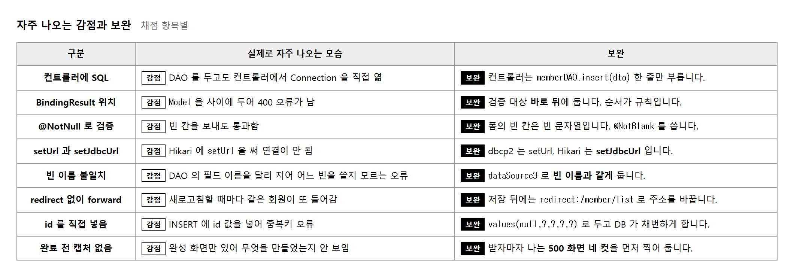